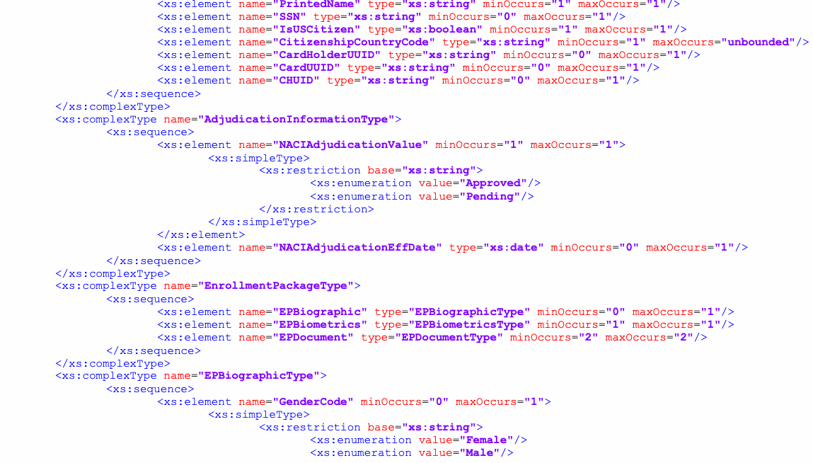
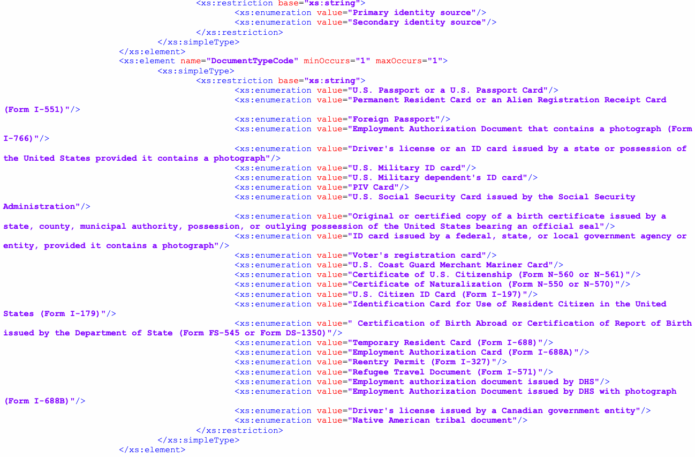
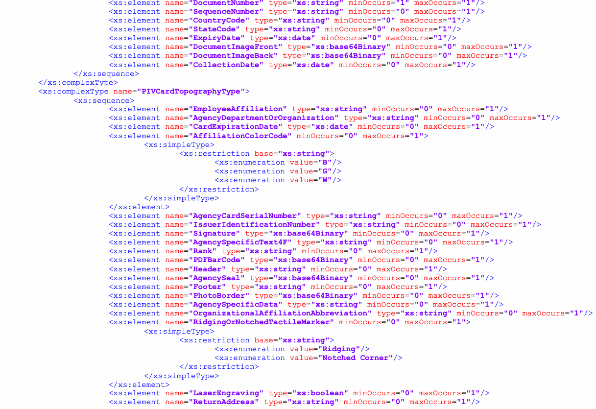
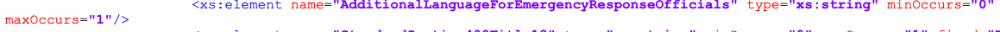
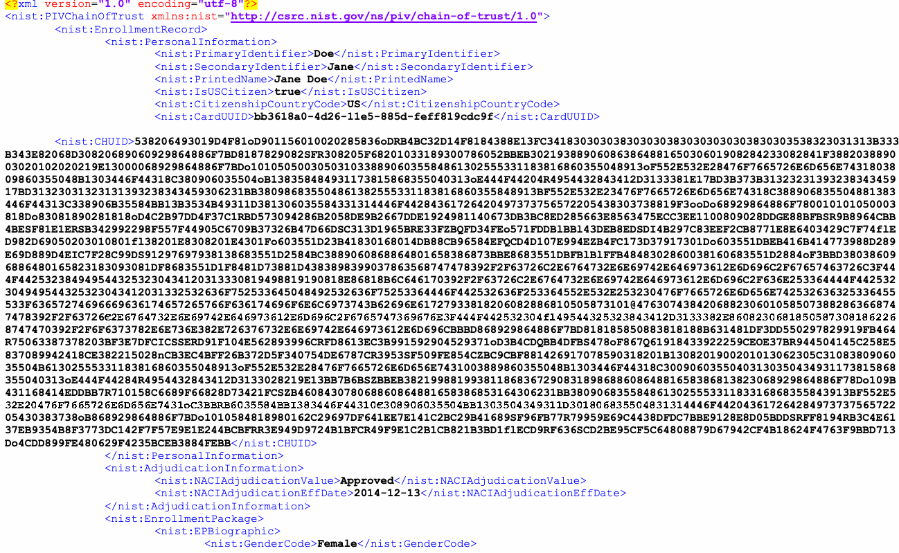
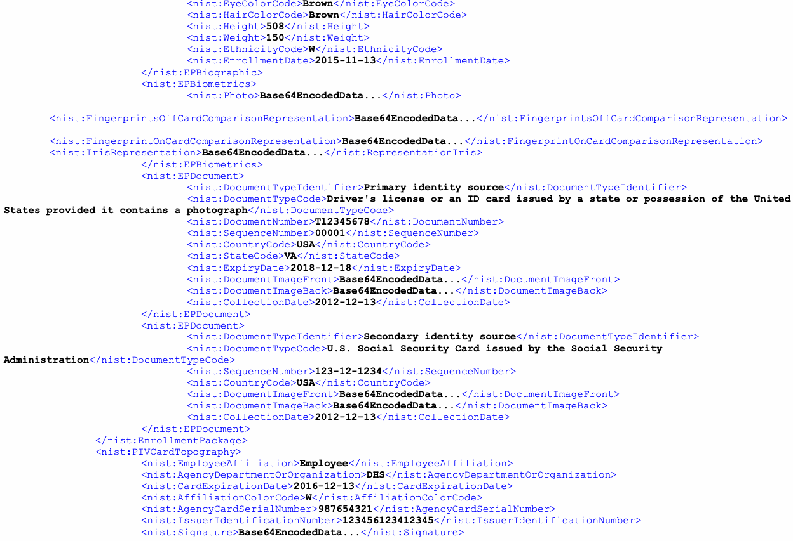
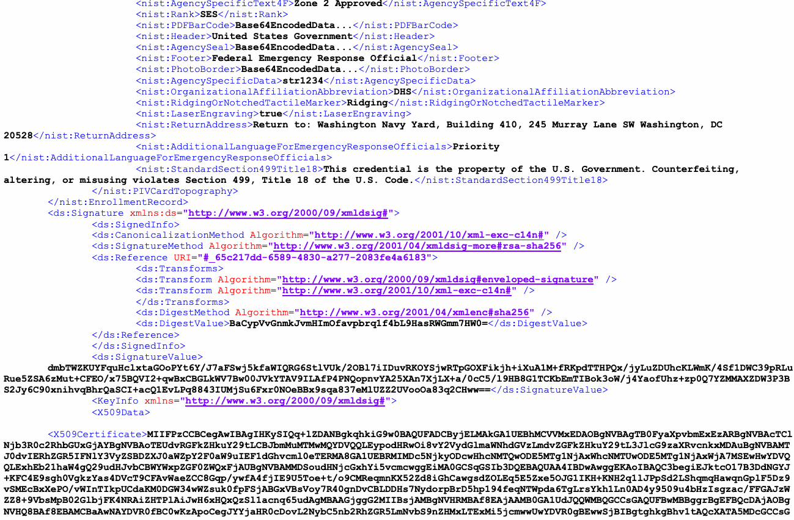
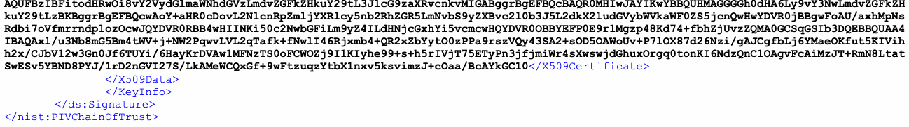

NIST SP 800-156 日本語訳
英語タイトル : Representation of PIV Chain-of-Trust for Import and Export日本語タイトル : PIV信頼チェーンのインポートおよびエクスポート表現
公開日 : 2016-05-20
原文URL : https://csrc.nist.gov/pubs/sp/800/156/final
翻訳編集 : 自動生成（有志による非公式の日本語訳）, 原文取得日 : 2026-09-30, 訳文 : 409 / 419 ブロック
[要約] SP 800-156 は、PIVカードの登録データ交換を容易にするため、信頼の連鎖記録の共通XMLベースのデータ表現を提供します。信頼の連鎖スキーマの名前空間と要素、登録記録・個人情報・身元調査の状況などを表す複合型を説明し、記録の転送時の暗号化やログおよび履歴データも扱います。交換される記録は、異動する従業員向けのPIVカードの個人化や、サービスプロバイダーが顧客連邦機関に代わって行う個人化の基礎となります。
Representation of
表現
PIV Chain-of-Trust for Import and Export
インポートおよびエクスポートのためのPIVの信頼の連鎖
Hildegard Ferraiolo Ramaswamy Chandramouli Ketan Mehta Jason Mohler Stephen Skordinski Steven Brady
ヒルデガード・フェライオロ、ラマスワミー・チャンドラモウリ、ケタン・メータ、ジェイソン・モーラー、スティーブン・スコルディンスキー、スティーブン・ブレイディ
This publication is available free of charge from: http://dx.doi.org/10.6028/NIST.SP.800-156
本出版物は次のURLから無料で入手できます: http://dx.doi.org/10.6028/NIST.SP.800-156
C O M P U T E R S E C U R I T Y
コンピューターセキュリティ
［NIST のロゴ。公的な標章のため、この非公式サイトには掲載していない。原本 PDF を参照。］
Representation of
表現
PIV Chain-of-Trust for Import and Export
インポートおよびエクスポートのためのPIVの信頼の連鎖
Hildegard Ferraiolo Ramaswamy Chandramouli Ketan Mehta Computer Security Division
ヒルデガード・フェライオロ、ラマスワミー・チャンドラモウリ、ケタン・メータ コンピューターセキュリティ部門
Information Technology Laboratory
情報技術研究所
Jason Mohler Stephen Skordinski Steven Brady
ジェイソン・モーラー、スティーブン・スコルディンスキー、スティーブン・ブレイディ
Electrosoft Services Inc.
Electrosoft Services Inc.
Reston, VA
バージニア州レストン
This publication is available free of charge from: http://dx.doi.org/10.6028/NIST.SP.800-156
本出版物は次のURLから無料で入手できます: http://dx.doi.org/10.6028/NIST.SP.800-156
May 2016
2016年5月
U.S. Department of Commerce Penny Pritzker, Secretary
米国商務省 ペニー・プリツカー長官
National Institute of Standards and Technology
国立標準技術研究所
Willie May, Under Secretary of Commerce for Standards and Technology and Director
ウィリー・メイ、商務省標準・技術担当次官兼所長
Authority
権限
This publication has been developed by NIST to further its statutory responsibilities under the Federal Information Security Modernization Act (FISMA) of 2014, 44 U.S.C. § 3541 et seq., Public Law 113-283. NIST is responsible for developing information security standards and guidelines, including minimum requirements for federal information systems, but such standards and guidelines shall not apply to national security systems without the express approval of appropriate federal officials exercising policy authority over such systems. This guideline is consistent with the requirements of the Office of Management and Budget (OMB) Circular A-130.
本刊行物は、2014年連邦情報セキュリティ近代化法（FISMA）（44 U.S.C. § 3541 以下、公法113-283）に基づく NIST の法定責任を果たすため、NIST が作成した。NIST は、連邦情報システムの最低要件を含む情報セキュリティの標準およびガイドラインを策定する責任を負う。ただし、これらの標準およびガイドラインは、当該システムに対する政策権限を行使する適切な連邦当局者の明示的な承認がない限り、国家安全保障システムには適用されない。本ガイドラインは、行政管理予算局（OMB）通達 A-130 の要件と整合している。
Nothing in this publication should be taken to contradict the standards and guidelines made mandatory and binding on federal agencies by the Secretary of Commerce under statutory authority. Nor should these guidelines be interpreted as altering or superseding the existing authorities of the Secretary of Commerce, Director of the OMB, or any other federal official. This publication may be used by nongovernmental organizations on a voluntary basis and is not subject to copyright in the United States. Attribution would, however, be appreciated by NIST.
本出版物のいかなる内容も、法定権限に基づき商務長官が連邦機関に義務付け、拘束力を持たせた標準およびガイドラインに反すると解釈してはならない。また、本ガイドラインは、商務長官、OMB長官またはその他の連邦当局者の既存の権限を変更もしくは置き換えるものと解釈してはならない。本出版物は非政府組織が任意で使用でき、米国内では著作権の対象とならない。ただし、NISTへの帰属表示を行うことが望ましい。
National Institute of Standards and Technology Special Publication 800-156 Natl. Inst. Stand. Technol. Spec. Publ. 800-156, 48pages (May 2016) CODEN: NSPUE2
National Institute of Standards and Technology Special Publication 800-156 Natl. Inst. Stand. Technol. Spec. Publ. 800-156, 48pages (May 2016) CODEN: NSPUE2
This publication is available free of charge from: http://dx.doi.org/10.6028/NIST.SP.800-156
本出版物は次のURLから無料で入手できます: http://dx.doi.org/10.6028/NIST.SP.800-156
Certain commercial entities, equipment, or materials may be identified in this document in order to describe an experimental procedure or concept adequately. Such identification is not intended to imply recommendation or endorsement by NIST, nor is it intended to imply that the entities, materials, or equipment are necessarily the best available for the purpose.
本文書では、実験的な手順や概念を適切に説明するために、特定の商業団体、機器、または資材を挙げている場合がある。そのような記載は、NIST による推奨または推薦を意味するものではなく、当該の団体、資材、または機器がその目的に対して必ずしも最良であることを意味するものでもない。
There may be references in this publication to other publications currently under development by NIST in accordance with its assigned statutory responsibilities. The information in this publication, including concepts and methodologies, may be used by federal agencies even before the completion of such companion publications. Thus, until each publication is completed, current requirements, guidelines, and procedures, where they exist, remain operative. For planning and transition purposes, Federal agencies may wish to closely follow the development of these new publications by NIST.
本刊行物には、NIST が割り当てられた法定責任に基づいて現在策定中の他の刊行物への言及が含まれる場合がある。概念や方法論を含む本刊行物の情報は、そうした関連刊行物の完成前であっても連邦機関が使用してよい。したがって、各刊行物が完成するまでは、現行の要件、ガイドライン、および手順が存在する場合、それらが引き続き有効である。計画および移行のために、連邦機関は、NIST によるこれらの新しい刊行物の策定状況を注意深く追うとよい。
Organizations are encouraged to review all draft publications during public comment periods and provide feedback to NIST. Many NIST cybersecurity publications, other than the ones noted above, are available at http://csrc.nist.gov/publications.
各組織は、パブリックコメント期間中にすべてのドラフト刊行物を確認し、NIST にフィードバックを提供することが推奨される。上記以外の多くの NIST サイバーセキュリティ刊行物は http://csrc.nist.gov/publications で入手できる。
Comments on this publication may be submitted to:
本刊行物に関するコメントの提出先：
National Institute of Standards and Technology Attn: Computer Security Division, Information Technology Laboratory 100 Bureau Drive (Mail Stop 8930) Gaithersburg, MD 20899-8930 Email: piv_comments@nist.gov
National Institute of Standards and Technology Attn: Computer Security Division, Information Technology Laboratory 100 Bureau Drive (Mail Stop 8930) Gaithersburg, MD 20899-8930 Email: piv_comments@nist.gov
All comments are subject to release under the Freedom of Information Act (FOIA).
すべてのコメントは、情報公開法（FOIA）に基づく公開の対象となる。
Reports on Computer Systems Technology
コンピューターシステム技術に関する報告書
The Information Technology Laboratory (ITL) at the National Institute of Standards and Technology (NIST) promotes the U.S. economy and public welfare by providing technical leadership for the Nation’s measurement and standards infrastructure. ITL develops tests, test methods, reference data, proof of concept implementations, and technical analyses to advance the development and productive use of information technology. ITL’s responsibilities include the development of management, administrative, technical, and physical standards and guidelines for the cost-effective security and privacy of other than national security-related information in federal information systems. The Special Publication 800-series reports on ITL’s research, guidelines, and outreach efforts in information system security, and its collaborative activities with industry, government, and academic organizations.
国立標準技術研究所（NIST）の情報技術研究所（ITL）は、国家の計測・標準インフラに技術的リーダーシップを提供することで、米国経済および公共の福祉を促進する。ITLは、情報技術の開発および生産的利用を推進するため、試験、試験方法、参照データ、概念実証の実装、および技術分析を開発する。ITLの責務には、国家安全保障関連以外の連邦情報システムにおける情報の費用対効果に優れたセキュリティおよびプライバシーのための、マネジメント面、管理面、技術面、物理面の標準およびガイドラインの策定が含まれる。特別出版物800シリーズは、情報システムセキュリティに関するITLの研究、ガイドラインおよび普及活動ならびに産業界、政府および学術機関との協力活動を報告する。
Abstract
概要
This document provides a common XML-based data representation of a chain-of-trust record to facilitate the exchange of Personal Identity Verification (PIV) Card enrollment data. The exchanged record is the basis to personalize a PIV Card for a transferred employee and also for service providers to personalize a PIV Card on behave of client federal agencies.
本書は、個人識別検証（PIV）カードの登録データ交換を容易にするため、信頼の連鎖記録の共通XMLベースデータ表現を提供する。交換される記録は、異動する従業員向けにPIVカードを個人化するため、またサービスプロバイダーが顧客連邦機関に代わってPIVカードを個人化するための基礎となる。
Keywords
キーワード
enrollment record; Federal Information Processing Standards (FIPS) 201; HSPD-12; identification; identity infrastructure; Personal Identity Verification (PIV); PIV Architecture; PIV Card; PIV chain-of-trust; XML information sharing
登録記録; 連邦情報処理標準（FIPS）201; HSPD-12; 識別; アイデンティティ基盤; 個人識別検証（PIV）; PIVアーキテクチャ; PIVカード; PIVの信頼の連鎖; XML情報共有
Acknowledgement
謝辞
The authors of SP 800-156 gratefully acknowledge and appreciate the support and contributions by many in the public and private sectors whose helpful and beneficial comments greatly enhance the utility of this publication. Special thanks to Stephen Sill and Matthew Arnold from the GSA HSPD-12 Managed Service Office (MSO) for their review and contributions to this document.
SP 800-156の著者は、本出版物の有用性を大きく高める有益なコメントを寄せてくださった官民双方の多くの方々の支援と貢献に深く感謝する。本書のレビューと貢献をいただいたGSA HSPD-12マネージドサービスオフィス（MSO）のStephen Sill氏およびMatthew Arnold氏に特に感謝する。
Table of Contents
目次
List of Appendices
付録一覧
List of Tables
表一覧
1 Introduction
1 はじめに
1.1 Background
1.1 背景
The Homeland Security Presidential Directive 12 [HSPD12] called for a common identification standard to be adopted governing the interoperable use of identity credentials to allow physical and logical access to federal government locations and systems. The Federal Information Processing Standard (FIPS) 201 [FIPS201], “Personal Identity Verification (PIV) of Federal Employees and Contractors,” was developed as the standard for the identity credentials hosted on a smart card called the PIV Card. [FIPS201] defines the identity proofing, registration, and issuance requirements for issuing PIV Cards to Federal Government employees and contractors.
国土安全保障大統領指令12 [HSPD12] は、連邦政府の施設およびシステムへの物理的・論理的アクセスを可能にするため、アイデンティティ資格情報の相互運用可能な使用を規定する共通識別標準の採用を求めた。連邦情報処理標準（FIPS）201 [FIPS201]「連邦職員および請負業者の個人識別検証（PIV）」は、PIVカードと呼ばれるスマートカードに搭載するアイデンティティ資格情報の標準として策定された。[FIPS201] は、連邦政府の職員および請負業者にPIVカードを発行する際の本人確認、登録および発行要件を定義する。
Data collected during identity proofing, registration, and issuance may be maintained in a chain-of-trust record. As per FIPS 201-2, “a card issuer may optionally maintain, for each PIV Card issued, a documentary chain-of-trust for the identification data it collects. The chain-of-trust is a sequence of related enrollment data records that are created and maintained through the methods of contemporaneous acquisition of data within each enrollment data record, and biometric matching of samples between enrollment data records.”
本人確認、登録および発行の過程で収集されたデータは、信頼の連鎖記録として保持される場合がある。FIPS 201-2によれば、「カード発行者は、発行した各PIVカードについて、収集した識別データの文書化された信頼の連鎖を任意で保持してもよい。信頼の連鎖とは、各登録データ記録内でのデータの同時取得および登録データ記録間のサンプルの生体照合という方法を通じて作成・維持される、相互に関連する登録データ記録の連続である。」
The chain-of-trust offers process efficiencies because a PIV Card can be re-issued based on the most current chain-of-trust record, and more importantly, can avoid having to repeat the identity proofing and re-registration (re-enrollment) process. Departments and agencies that implement a chain-of-trust will also be able to transfer the record to another agency or to a service provider, so that the receiving agency or service provider can use the record to issue a PIV Card rather than re-enroll an applicant. This Special Publication provides the representation of a chain-of-trust for import and export between PIV Card issuers.
信頼の連鎖により、最新の信頼の連鎖記録に基づいてPIVカードを再発行でき、さらに重要なことに、本人確認および再登録（再登録手続き）を繰り返す必要を回避できるため、プロセス効率が向上する。信頼の連鎖を実装する部門および機関は、記録を別の機関またはサービスプロバイダーに移管することもでき、受領側は申請者を再登録する代わりにその記録を使用してPIVカードを発行できる。本特別出版物は、PIVカード発行者間でインポートおよびエクスポートするための信頼の連鎖の表現を提供する。
1.2 Purpose and Scope
1.2 目的および適用範囲
[FIPS201] describes three use cases for a chain-of-trust: 1) to extend enrollment, 2) to re-issue a PIV Card, and 3) to transfer PIV Card enrollment records to another federal issuer or to a service provider. The purpose of this document is to provide the data representation of a chain-of-trust record for the transferal use case. The data representation is based on a common XML (Extensible Markup Language) schema to facilitate interoperable information sharing and data exchange. The sending and receiving federal agencies will be able to exchange the chain-of-trust data according to the specifications provided in this document. Similarly, a service provider will be able to receive chain-of-trust records from different client agencies that are based on a common XML schema specified in this document. This document also provides support for data integrity through digital signatures and for confidentiality through encryption of chain-of-trust data, in transit and at rest.
[FIPS201] は、信頼の連鎖に関する3つのユースケースを説明している。1) 登録を拡張する、2) PIVカードを再発行する、3) PIVカードの登録記録を別の連邦発行者またはサービスプロバイダーに移管する。本書の目的は、移管ユースケース向けの信頼の連鎖記録のデータ表現を提供することである。このデータ表現は、相互運用可能な情報共有およびデータ交換を容易にする共通XML（拡張可能マークアップ言語）スキーマに基づく。送信側および受信側の連邦機関は、本書の仕様に従って信頼の連鎖データを交換できる。同様に、サービスプロバイダーは、本書で規定する共通XMLスキーマに基づく、さまざまな顧客機関からの信頼の連鎖記録を受け取ることができる。本書は、デジタル署名によるデータ完全性のサポート、および転送中と保存時の信頼の連鎖データ暗号化による機密性のサポートも提供する。
There are two use cases within the transferal scenario which this document supports:
本書がサポートする移管シナリオには、次の2つのユースケースがある:
Agency to agency: In this use case, an existing PIV cardholder from agency A is transferring to agency B, where he/she will require a new PIV Card issued by agency B. Rather than re-enrolling the user, the chain-of-trust record is sent, (upon Agency B’s request) from agency A to agency B such that agency B is able to reuse the enrollment data, thus reducing the time and effort required for agency B to issue a new PIV Card.
機関から機関へ: このユースケースでは、機関Aの既存PIVカード保持者が機関Bに異動し、機関Bが発行する新しいPIVカードを必要とする。ユーザーを再登録する代わりに、機関Bの要求に応じて信頼の連鎖記録が機関Aから機関Bへ送信されるため、機関Bは登録データを再利用でき、新しいPIVカード発行に必要な時間と労力を削減できる。
Agency to service provider: In this use case, an agency does not directly issue PIV Cards to their employees and contractors, but instead utilizes a separate service provider for issuance of PIV Cards. The agency can use the chain-of-trust to send PIV Card enrollment data collected by the agency to the service provider.
機関からサービスプロバイダーへ: このユースケースでは、機関は職員および請負業者にPIVカードを直接発行せず、別のサービスプロバイダーを利用してPIVカードを発行する。機関は信頼の連鎖を使用して、機関が収集したPIVカード登録データをサービスプロバイダーに送信できる。
It is anticipated that more optional elements will be populated in the chain-of-trust XML record for the agency to service provider use case than the agency to agency use case. In the agency to service provider exchange, the agency is likely to indicate several optional elements that are not applicable in the agency to agency use case. Examples of these elements include those that would be printed on a card and are provided by the agency to the service provider, such as <EmployeeAffiliation>, <AgencyDepartmentOrOrganization>, <AffiliationColorCode>, and <Rank>.
機関からサービスプロバイダーへのユースケースでは、機関間ユースケースよりも多くの任意要素が信頼の連鎖XML記録に設定されると想定される。機関からサービスプロバイダーへの交換では、機関間ユースケースには該当しない任意要素を機関が複数指定する可能性が高い。これらの要素には、カードに印字される項目で、機関からサービスプロバイダーへ提供されるもの（<EmployeeAffiliation>、<AgencyDepartmentOrOrganization>、<AffiliationColorCode>、<Rank>など）が含まれる。
Regardless of the use case, the goal is to provide a common chain-of-trust schema to facilitate information sharing and data exchange between different issuers.
ユースケースに関係なく、異なる発行者間の情報共有およびデータ交換を容易にする共通の信頼の連鎖スキーマを提供することが目標である。
1.3 Document Structure
1.3 文書の構成
The remainder of this document is divided into the following sections and appendices:
本書の残りの部分は、次の各節および付録で構成される:
•Section 2, Chain-of-Trust Data Requirements and Namespaces, discusses the representation of chain-of-trust data in XML schemas.
•第2節「信頼の連鎖データ要件および名前空間」では、XMLスキーマにおける信頼の連鎖データの表現を論じる。
•Section 3, Chain-of-Trust Schema Description, documents the detail of chain-of-trust XML schema.
•第3節「信頼の連鎖スキーマの説明」では、信頼の連鎖XMLスキーマの詳細を記載する。
•Section 4, Chain-of-trust Record Encryption in Transit, identifies the requirements for encrypting chain-of-trust data.
•第4節「信頼の連鎖記録の転送時暗号化」では、信頼の連鎖データを暗号化する要件を示す。
•Section 5, Log and Historical Data, discusses the requirement for the chain-of-trust producer to maintain records related to the cardholder.
•第5節「ログおよび履歴データ」では、信頼の連鎖の作成者がカード保持者に関連する記録を維持する要件を論じる。
•Appendix A contains the XML schema for the chain-of-trust.
•付録Aには、信頼の連鎖のXMLスキーマを含む。
•Appendix B contains a sample XML chain-of-trust data record.
•付録Bには、信頼の連鎖データ記録のXMLサンプルを含む。
•Appendix C identifies references used in this document.
•付録Cには、本書で使用した参考文献を示す。
•Appendix D provides a glossary of terms used in this document.
•付録Dには、本書で使用する用語の用語集を示す。
•Appendix E provides a list of acronyms and abbreviations used in this document.
•付録Eには、本書で使用する略語および頭字語の一覧を示す。
1.4 Document Conventions
1.4 文書の表記規則
Throughout this document key words are used to identify requirements. The key words “optional”, “required”, “shall”, “shall not”, and “should” are used. These words are a subset of the IETF Request For Comments (RFC) 2119 [RFC2119] key words, and have been chosen based on convention in other normative documents. In addition to the key words, the words ‘need,’ ‘can,’ and ‘may’ are used in this document, but are not intended to be normative.
本書では、要件を示すためにキーワードを使用する。「任意（optional）」、「必須（required）」、「しなければならない（shall）」、「してはならない（shall not）」および「すべきである（should）」を使用する。これらの語は、IETF Request For Comments（RFC）2119 [RFC2119] のキーワードの一部であり、他の規範文書での慣例に基づいて選定された。これらのキーワードに加えて、本書では「必要がある（need）」、「できる（can）」および「してよい（may）」も使用するが、これらは規範的な意味を意図していない。
2 Chain-of-Trust Data Requirements and Namespaces
2 信頼の連鎖データ要件および名前空間
[FIPS201] recommends that the following data be included in the chain-of-trust:
[FIPS201] は、信頼の連鎖に次のデータを含めることを推奨している:
•A log of activities that documents who took the action, what action was taken, when and where the action took place, and what identification data was collected.
•誰がどのような措置をいつどこで実施し、どの識別データを収集したかを記録する活動ログ。
•An enrollment data record that contains the most recent collection of each of the biometric data collected. The enrollment data record describes the circumstances of biometric acquisition including the name and role of the acquiring agent, the office and organization, time, place, and acquisition method. The enrollment data record may also document unavailable biometric data or failed attempts to collect biometric data. The enrollment data record may contain historical biometric data.
•収集された各生体データの最新の収集内容を含む登録データ記録。登録データ記録は、取得担当者の氏名および役割、事務所および組織、時刻、場所、取得方法など、生体情報取得の状況を記述する。登録データ記録には、利用できなかった生体データまたは生体データ収集の失敗を記録してもよい。また、過去の生体データを含めてもよい。
•The most recent unique identifiers (i.e., Federal Agency Smart Credential Number (FASC-N) and Universally Unique Identifier (UUID)) issued to the individual’s card. The record may contain historical unique identifiers.
•個人のカードに発行された最新の一意識別子（すなわち、連邦機関スマート資格情報番号（FASC-N）および汎用一意識別子（UUID））。記録には過去の一意識別子を含めてもよい。
•Information about the authorizing entity who has approved the issuance of a credential.
•資格情報の発行を承認した承認主体に関する情報。
•Current status of the background investigation, including the results of the investigation once completed.
•完了後の調査結果を含む、身元調査の現在の状況。
•The evidence of authorization if the credential is issued under a pseudonym.
•仮名で資格情報を発行する場合の承認証拠。
•Any data or any subsequent changes in the data about the cardholder. If the changed data is the cardholder’s name, then the issuer should include the evidence of a formal name change.
•カード保持者に関するあらゆるデータおよびその後の変更。変更されたデータがカード保持者の氏名である場合、発行者は正式な氏名変更の証拠を含めるべきである。
The following sections provide an XML schema representation of the baseline data included in the chain-of-trust.
以下の各節では、信頼の連鎖に含まれる基本データを表すXMLスキーマを示す。
This schema has been authored to address the broadest envisioned range of chain-of-trust data to be able to transfer PIV Card enrollment records across federal agencies and to a service provider. Users of this XML schema may extend the schema as needed. Extending the XML schema will allow the exchange of additional elements to meet requirements for specialized exchange of chain-of-trust data. However, extending the XML schema will also result in custom exchange that is less interoperable.
このスキーマは、連邦機関間およびサービスプロバイダーへのPIVカード登録記録移管を可能にするため、想定される最も広範な信頼の連鎖データに対応するよう作成された。このXMLスキーマの利用者は、必要に応じてスキーマを拡張してもよい。XMLスキーマを拡張すると、信頼の連鎖データの特殊な交換要件を満たすための追加要素を交換できる。ただし、XMLスキーマを拡張すると、交換はカスタム化され、相互運用性が低下する。
2.1 Namespaces Declaration for Chain-of-Trust Schema
2.1 信頼の連鎖スキーマの名前空間宣言
XML namespace prefixes are used throughout this specification to stand for their respective namespaces as follows:
本仕様では、各名前空間を表すため、次のXML名前空間プレフィックスを全体で使用する:
Table 1: Standard Namespace
表1: 標準名前空間
| Prefix | XML Namespace | Comments |
|---|---|---|
| ds: | http:/ | This is the W3C XML Signature namespace [XMLSig]. |
| nist: | http:/ | This is the NIST’s Computer Security Division’s chain-of-trust namespace. |
| xenc: | http:/ | This is the W3C XML Encryption namespace [XMLEnc]. |
| xs: | http:/ | This is the schema for XML schemas namespace [XMLSchema]. |
| プレフィックス | XML名前空間 | 備考 |
|---|---|---|
| ds: | http:/ | W3C XML署名の名前空間である [XMLSig]。 |
| nist: | http:/ | NISTコンピュータセキュリティ部門の信頼の連鎖の名前空間である。 |
| xenc: | http:/ | W3C XML暗号化の名前空間である [XMLEnc]。 |
| xs: | http:/ | XMLスキーマの名前空間のためのスキーマである [XMLSchema]。 |
The chain of trust schema defined in this document can be downloaded at http://csrc.nist.gov/schema/piv/chain-of-trust/piv-chain-of-trust-1.0.xsd.
本書で定義する信頼の連鎖スキーマは、http://csrc.nist.gov/schema/piv/chain-of-trust/piv-chain-of-trust-1.0.xsd からダウンロードできる。
This specification uses the following typographical conventions in the text: <Element>, Defined Type, XML and XML schema.
本仕様では、本文中で次の表記規則を用いる：<Element>、Defined Type、XML および XML スキーマ。
3 Chain-of-Trust Schema Description
3 信頼の連鎖スキーマの説明
The chain-of-trust data is encoded in the XML format specified in this document. The chain-of-trust XML records are intended to be used in a direct-exchange. While log and historical data are not included in the XML chain-of-trust record, the issuer of the chain-of-trust record should be able to correlate the chain-of-trust record to the associated log and historic data, if requested to do so by the recipient of the chain-of-trust record. The <PIVTrustChain> element may include the records for multiple subjects, with each <EnrollmentRecord> element containing the record for a single subject.
信頼の連鎖データは、本書で規定するXML形式で符号化される。信頼の連鎖XML記録は、直接交換で使用することを意図している。ログおよび履歴データは信頼の連鎖XML記録に含まれないが、信頼の連鎖記録の発行者は、受領者から要求された場合に、当該記録を関連するログおよび履歴データと対応付けられるようにしておくべきである。<PIVTrustChain>要素には複数の対象者の記録を含めてもよく、各<EnrollmentRecord>要素には単一の対象者の記録が含まれる。
This section contains an overview of the elements that may appear in a chain-of-trust XML file.
本節では、PIV信頼チェーンXMLファイルに含まれる可能性がある要素の概要を示す。
3.1 Schema Header and Namespace Declarations
3.1 スキーマヘッダーと名前空間宣言
The following schema fragment defines the XML namespaces and other header information for the PIV chain-of-trust schema:
次のスキーマ断片は、PIV信頼チェーンスキーマのXML名前空間およびその他のヘッダー情報を定義する。
<xs:schema elementFormDefault="qualified" xmlns:xs="http://www.w3.org/2001/XMLSchema" targetNamespace="http://csrc.nist.gov/ns/piv/chain-of-trust/1.0"
<xs:schema elementFormDefault="qualified" xmlns:xs="http://www.w3.org/2001/XMLSchema" targetNamespace="http://csrc.nist.gov/ns/piv/chain-of-trust/1.0"
xmlns="http://csrc.nist.gov/ns/piv/chain-of-trust/1.0" xmlns:ds="http://www.w3.org/2000/09/xmldsig#" xmlns:xenc="http://www.w3.org/2001/04/xmlenc#">
xmlns="http://csrc.nist.gov/ns/piv/chain-of-trust/1.0" xmlns:ds="http://www.w3.org/2000/09/xmldsig#" xmlns:xenc="http://www.w3.org/2001/04/xmlenc#">
<xs:import namespace="http://www.w3.org/2000/09/xmldsig#"
<xs:import namespace="http://www.w3.org/2000/09/xmldsig#"
schemaLocation="http://www.w3.org/TR/2002/REC-xmldsig-core-20020212/xmldsig-core-schema.xsd"/>
schemaLocation="http://www.w3.org/TR/2002/REC-xmldsig-core-20020212/xmldsig-core-schema.xsd"/>
<xs:import namespace="http://www.w3.org/2001/04/xmlenc#"
<xs:import namespace="http://www.w3.org/2001/04/xmlenc#"
schemaLocation="http://www.w3.org/TR/2002/REC-xmlenc-core-20021210/xenc-schema.xsd"/>
schemaLocation="http://www.w3.org/TR/2002/REC-xmlenc-core-20021210/xenc-schema.xsd"/>
3.2 Element <PIVChainOfTrust>
3.2 要素 <PIVChainOfTrust>
The following schema fragment defines the <PIVChainOfTrust> element:
次のスキーマ断片は、<PIVChainOfTrust>要素を定義する。
<xs:element name="PIVChainOfTrust" type="PIVChainOfTrustType"/>
<xs:element name="PIVChainOfTrust" type="PIVChainOfTrustType"/>
The <PIVChainOfTrust> element is of PIVChainOfTrustType complex type, and carries one or more <EnrollmentRecord> elements.
<PIVChainOfTrust>要素はPIVChainOfTrustType複合型であり、一つ以上の<EnrollmentRecord>要素を格納する。
3.3 Complex Type PIVChainOfTrustType
3.3 複合型 PIVChainOfTrustType
The following schema fragment defines the PIVChainOfTrustType complex type:
次のスキーマ断片は、PIVChainOfTrustType複合型を定義する。
<xs:complexType name="PIVChainOfTrustType"> <xs:sequence> <xs:choice>
<xs:complexType name="PIVChainOfTrustType"> <xs:sequence> <xs:choice>
<xs:sequence> <xs:element ref="xenc:EncryptedData" minOccurs="1" maxOccurs="1"/> <xs:element ref="xenc:EncryptedKey" minOccurs="1" maxOccurs="unbounded"/> </xs:sequence> <xs:sequence> <xs:element name="EnrollmentRecord" type="EnrollmentRecordType" minOccurs="1" maxOccurs="unbounded"/> <xs:element ref="ds:Signature" minOccurs="1" maxOccurs="1"/> </xs:sequence> </xs:choice> </xs:sequence>
<xs:sequence> <xs:element ref="xenc:EncryptedData" minOccurs="1" maxOccurs="1"/> <xs:element ref="xenc:EncryptedKey" minOccurs="1" maxOccurs="unbounded"/> </xs:sequence> <xs:sequence> <xs:element name="EnrollmentRecord" type="EnrollmentRecordType" minOccurs="1" maxOccurs="unbounded"/> <xs:element ref="ds:Signature" minOccurs="1" maxOccurs="1"/> </xs:sequence> </xs:choice> </xs:sequence>
</xs:complexType>
</xs:complexType>
The PIVChainOfTrustType complex type offers a choice to either encrypt the PIV chain-of-trust records, or to leave the record unencrypted. PIV chain-of-trust records contain personally identifiable information (PII) of actual PIV cardholders and thus shall always be encrypted when in transit. The unencrypted sequence is intended to allow a recipient of the record to validate/test XML records as required. The recipient of the record should protect the records accordingly when not in use (i.e., data at rest protection).
PIVChainOfTrustType複合型では、PIV信頼チェーン記録を暗号化するか、暗号化しないかを選択できる。PIV信頼チェーン記録には実際のPIVカード保有者の個人識別情報（PII）が含まれるため、転送中は必ず暗号化しなければならない。暗号化しないシーケンスは、受信者が必要に応じてXML記録を検証／試験できるようにすることを目的とする。受信者は、記録を使用していない間、適切に保護すべきである（すなわち、保存データの保護）。
Each instance of the <EnrollmentRecord> element contains the enrollment information captured by the PIV issuer for a single PIV cardholder. There is a minimum of one instance of this element, and there is no limit to the maximum number of <EnrollmentRecord> elements that may be contained in the <PIVChainOfTrust> element. This allows a single instance of the <PIVChainOfTrust> element to contain several PIV cardholder records in an XML file.
<EnrollmentRecord>要素の各インスタンスには、PIV発行者が一人のPIVカード保有者について取得した登録情報が含まれる。この要素は少なくとも一つ必要であり、<PIVChainOfTrust>要素に含める<EnrollmentRecord>要素の最大数に制限はない。これにより、一つの<PIVChainOfTrust>要素インスタンスに、一つのXMLファイル内で複数のPIVカード保有者の記録を格納できる。
Encrypted PIV chain-of-trust records are intended to include a confidentiality protection mechanism. The encrypted content and associated encryption details are defined by the XML Encryption Syntax and Processing specification [XMLEnc]. The <EncryptedData> Type attribute should be present and contain a value of http://www.w3.org/2001/04/xmlenc#Element. The encryption method algorithm for the <EncryptedData> element should be set to: http://www.w3.org/2001/04/xmlenc#aes256-cbc.
暗号化されたPIV信頼チェーン記録には、機密性保護メカニズムを含めることを意図している。暗号化コンテンツと関連する暗号化の詳細は、XML Encryption Syntax and Processing仕様[XMLEnc]で定義される。<EncryptedData>のType属性を指定し、値をhttp://www.w3.org/2001/04/xmlenc#Elementとすべきである。<EncryptedData>要素の暗号化方式アルゴリズムは、http://www.w3.org/2001/04/xmlenc#aes256-cbcに設定すべきである。
The <xenc:EncryptedKey> element is defined in the [XMLEnc] standard and used to transport encrypted symmetric keys from the originator to a known recipient(s). The symmetric key value is always encrypted to the recipient(s). A public key from a PKI certificate should be used to encrypt the symmetric key. The sender should select an encryption certificate for the recipient issued under a policy that has been cross-certified with the Federal Bridge CA (FBCA) at the Medium Hardware or High Assurance Level. The sender should use http://www.w3.org/2001/04/xmlenc#rsa-oaep-mgf1p as the key transport algorithm to encrypt the key. Each encrypted key should include a Recipient attribute that contains a hint as to which recipient the encrypted key value is intended for. An example value that could be used in the Recipient attribute is the distinguished name (DN) from the recipient’s encryption certificate subject field.
<xenc:EncryptedKey>要素は[XMLEnc]標準で定義され、暗号化された共通鍵を送信者から既知の受信者へ転送するために使用される。共通鍵の値は常に受信者向けに暗号化される。共通鍵の暗号化には、PKI証明書の公開鍵を使用すべきである。送信者は、Federal Bridge CA（FBCA）とMedium HardwareまたはHigh Assurance Levelで相互認証されたポリシーの下で発行された受信者の暗号化証明書を選択すべきである。鍵を暗号化する鍵転送アルゴリズムとして、http://www.w3.org/2001/04/xmlenc#rsa-oaep-mgf1pを使用すべきである。暗号化鍵ごとにRecipient属性を含め、その暗号化鍵値がどの受信者を対象とするかの手掛かりを指定すべきである。Recipient属性には、受信者の暗号化証明書のsubjectフィールドにある識別名（DN）を使用できる。
A procedure for the exchange of the key encryption key is outside the scope of this document. Some example mechanisms for this exchange include the use of Secure/Multipurpose Internet Mail Extensions (S/MIME) email exchanges to share the encryption certificates, or a webpage that supports Hyper Text Transfer Protocol with Secure Sockets Layer (HTTPS) using an FPKI SSL certificate or an Extended Validation Secure Sockets Layer (EVSSL) certificate, where links to the encryption certificates for recipient federal agencies or service providers can be accessed and downloaded.
鍵暗号化鍵を交換する手順は、本書の適用範囲外である。この交換に使えるメカニズムの例として、暗号化証明書を共有するためのSecure/Multipurpose Internet Mail Extensions（S/MIME）電子メール交換や、FPKI SSL証明書またはExtended Validation Secure Sockets Layer（EVSSL）証明書を使用するHyper Text Transfer Protocol with Secure Sockets Layer（HTTPS）対応ウェブページがある。こうしたページでは、連邦機関またはサービスプロバイダーの受信者向け暗号化証明書へのリンクにアクセスし、ダウンロードできる。
All PIV chain-of-trust records are signed using XML Signature. An XML Signature protects the integrity of the data and authenticates the issuer of the chain-of-trust. A valid PIV Card or a private key generated under the id-fpki-common-piv-contentSigning certificate policy should be used to sign the XML record.
すべてのPIV信頼チェーン記録には、XML Signatureを用いて署名する。XML Signatureはデータの完全性を保護し、信頼チェーンの発行者を認証する。XML記録への署名には、有効なPIVカード、またはid-fpki-common-piv-contentSigning証明書ポリシーに基づいて生成された秘密鍵を用いるべきである。
3.4 Complex Type EnrollmentRecordType
3.4 複合型 EnrollmentRecordType
The following schema fragment defines the EnrollmentRecordType complex type:
次のスキーマ断片は、EnrollmentRecordType複合型を定義する。
<xs:complexType name="EnrollmentRecordType"> <xs:sequence> <xs:element name="PersonalInformation" type="PersonalInformationType" minOccurs="1"
<xs:complexType name="EnrollmentRecordType"> <xs:sequence> <xs:element name="PersonalInformation" type="PersonalInformationType" minOccurs="1"
maxOccurs="1"/> <xs:element name="AdjudicationInformation" type="AdjudicationInformationType" minOccurs="1" maxOccurs="1"/> <xs:element name="EnrollmentPackage" type="EnrollmentPackageType" minOccurs="1" maxOccurs="1"/> <xs:element name="PIVCardTopography" type="PIVCardTopographyType" minOccurs="0" maxOccurs="1"/> </xs:sequence>
maxOccurs="1"/> <xs:element name="AdjudicationInformation" type="AdjudicationInformationType" minOccurs="1" maxOccurs="1"/> <xs:element name="EnrollmentPackage" type="EnrollmentPackageType" minOccurs="1" maxOccurs="1"/> <xs:element name="PIVCardTopography" type="PIVCardTopographyType" minOccurs="0" maxOccurs="1"/> </xs:sequence>
</xs:complexType>
</xs:complexType>
The EnrollmentRecordType complex type contains four elements carrying data required for the issuance of a PIV Card to the cardholder. The elements contained in the EnrollmentRecordType complex type are:
EnrollmentRecordType複合型には、カード保有者へのPIVカード発行に必要なデータを含む四つの要素がある。EnrollmentRecordType複合型に含まれる要素は次のとおりである。
<PersonalInformation>:
<PersonalInformation>：
This element is an instance of the PersonalInformationType complex type and contains personally identifying information on the subject of the chain-of-trust enrollment record. The <PersonalInformation> element is a required element that appears once in the EnrollmentRecordType complex type.
この要素はPersonalInformationType複合型のインスタンスであり、信頼チェーン登録記録の対象者に関する個人識別情報を含む。<PersonalInformation>要素は必須であり、EnrollmentRecordType複合型に一回出現する。
<AdjudicationInformation>:
<AdjudicationInformation>：
This element is an instance of the AdjudicationInformationType complex type and contains information on the status of the background investigation into the subject of the chain-of-trust enrollment record. The <AdjudicationInformation> element is a required element that appears once in the EnrollmentRecordType complex type.
この要素はAdjudicationInformationType複合型のインスタンスであり、信頼の連鎖登録記録の対象者に関する身元調査の状況を含む。<AdjudicationInformation>要素は必須であり、EnrollmentRecordType複合型に一回出現する。
<EnrollmentPackage>:
<EnrollmentPackage>：
This element is an instance of the EnrollmentPackageType complex type and contains biographic and biometric information on the subject of the chain-of-trust enrollment record. The <EnrollmentPackage> element is a required element that appears once in the EnrollmentPackageType complex type.
この要素はEnrollmentPackageType複合型のインスタンスであり、信頼の連鎖登録記録の対象者に関する経歴情報および生体情報を含む。<EnrollmentPackage>要素は必須であり、EnrollmentPackageType複合型に一回出現する。
<PIVCardTopography>:
<PIVCardTopography>：
This element is an instance of the PIVCardTopographyType complex type and contains information used for the physical printing of PIV Cards. The <PIVCardTopography> element is an optional element. If used, it would appear once in the EnrollmentRecordType complex type.
この要素はPIVCardTopographyType複合型のインスタンスであり、PIVカードの物理印刷に用いる情報を含む。<PIVCardTopography>要素は任意である。使用する場合はEnrollmentRecordType複合型に一回出現する。
The EnrollmentRecordType for an agency to agency record exchange use case would typically include the following types:
機関間の記録交換ユースケースにおけるEnrollmentRecordTypeには、通常、次の型が含まれる。
•PersonalInformationType
•PersonalInformationType
•AdjudicationInformationType
•AdjudicationInformationType
•EnrollmentPackageType
•EnrollmentPackageType
The EnrollmentRecordType for an agency to service provider record exchange use case would typically include the following types:
機関からサービスプロバイダーへの記録交換のユースケースにおける EnrollmentRecordType には、通常、次の型が含まれる。
•PersonalInformationType
•PersonalInformationType
•AdjudicationInformationType
•AdjudicationInformationType
•EnrollmentPackageType
•EnrollmentPackageType
•PIVCardTopographyType
•PIVCardTopographyType
As indicated above, the PIVCardTopographyType data element is more likely to be included in the service provider record exchange use case rather than the agency to agency record exchange use case. This is because a client agency needs to provide information about its agency and its new employees/contractors to be printed on the surface of each card. For the agency to agency record exchange, topographic information may not be needed as the receiving agency will use its own topographic elements when printing on the PIV Card.
上述のとおり、PIVCardTopographyType データ要素は、機関間の記録交換のユースケースよりも、サービスプロバイダーとの記録交換のユースケースに含まれる可能性が高い。これは、クライアント機関が、各カードの表面に印刷される自機関および新規の職員・契約者に関する情報を提供する必要があるためである。機関間の記録交換では、受け入れ側の機関が PIV カードへの印刷時に自機関のトポグラフィ要素を使用するため、トポグラフィ情報は不要な場合がある。
3.5 Complex Type PersonalInformationType
3.5 複合型 PersonalInformationType
The following schema fragment defines the PersonalInformationType complex type:
次のスキーマ断片は、PersonalInformationType 複合型を定義する。
<xs:complexType name="PersonalInformationType"> <xs:sequence> <xs:element name="PrimaryIdentifier" type="xs:string" minOccurs="1" maxOccurs="1"/> <xs:element name="SecondaryIdentifier" type="xs:string" minOccurs="1" maxOccurs="1"/> <xs:element name="PrintedName" type="xs:string" minOccurs="1" maxOccurs="1"/> <xs:element name="SSN" type="xs:string" minOccurs="0" maxOccurs="1"/> <xs:element name="IsUSCitizen" type="xs:boolean" minOccurs="1" maxOccurs="1"/> <xs:element name="CitizenshipCountryCode" type="xs:string" minOccurs="1" maxOccurs="unbounded"/> <xs:element name="CardHolderUUID" type="xs:string" minOccurs="0" maxOccurs="1"/> <xs:element name="CardUUID" type="xs:string" minOccurs="0" maxOccurs="1"/> <xs:element name="CHUID" type="xs:string" minOccurs="0" maxOccurs="1"/> </xs:sequence> </xs:complexType>
<xs:complexType name="PersonalInformationType"> <xs:sequence> <xs:element name="PrimaryIdentifier" type="xs:string" minOccurs="1" maxOccurs="1"/> <xs:element name="SecondaryIdentifier" type="xs:string" minOccurs="1" maxOccurs="1"/> <xs:element name="PrintedName" type="xs:string" minOccurs="1" maxOccurs="1"/> <xs:element name="SSN" type="xs:string" minOccurs="0" maxOccurs="1"/> <xs:element name="IsUSCitizen" type="xs:boolean" minOccurs="1" maxOccurs="1"/> <xs:element name="CitizenshipCountryCode" type="xs:string" minOccurs="1" maxOccurs="unbounded"/> <xs:element name="CardHolderUUID" type="xs:string" minOccurs="0" maxOccurs="1"/> <xs:element name="CardUUID" type="xs:string" minOccurs="0" maxOccurs="1"/> <xs:element name="CHUID" type="xs:string" minOccurs="0" maxOccurs="1"/> </xs:sequence> </xs:complexType>
The CardUUID and CHUID type data element generally is not included in the agency to agency record exchange use case as the new agency will generate these values. For the agency to servicer provider record exchange, however, the client agency may wish to specify the CardUUID and CHUID for each PIV cardholder.
機関間の記録交換のユースケースでは、新しい機関がこれらの値を生成するため、CardUUID および CHUID 型のデータ要素は一般に含まれない。一方、機関からサービスプロバイダーへの記録交換では、クライアント機関が PIV カード保有者ごとに CardUUID および CHUID を指定したいと考える場合がある。
The PersonalInformationType complex type contains eight elements that describe the subject of the chain-of-trust enrollment record. Those elements are:
PersonalInformationType 複合型には、信頼チェーン登録記録の対象者を記述する八つの要素がある。要素は次のとおりである。
<PrimaryIdentifier>:
<PrimaryIdentifier>:
This element contains the Primary Identifier of the subject of the chain-of-trust enrollment record. The Primary Identifier is defined in [FIPS201] as the surnames or family names of the PIV cardholder. The <PrimaryIdentifier> element is always included in the PersonalInformationType complex type and appears only once. The data is provided in an xs:string format.
この要素には、信頼チェーン登録記録の対象者の Primary Identifier が含まれる。Primary Identifier は、[FIPS201] で PIV カード保有者の姓（surnames または family names）と定義されている。<PrimaryIdentifier> 要素は PersonalInformationType 複合型に必ず含まれ、一回のみ出現する。データは xs:string 形式で提供される。
<SecondaryIdentifier>:
<SecondaryIdentifier>:
This element contains the Secondary Identifier of the subject of the chain-of-trust enrollment record. The Secondary Identifier is defined in [FIPS201] as pre-names or given names of the PIV Cardholder. The <SecondaryIdentifier> element is always included in the PersonalInformationType complex type and occurs only once. The data is provided in an xs:string format.
この要素には、信頼チェーン登録記録の対象者の Secondary Identifier が含まれる。Secondary Identifier は、[FIPS201] で PIV カード保有者の名（pre-names または given names）と定義されている。<SecondaryIdentifier> 要素は PersonalInformationType 複合型に必ず含まれ、一回のみ出現する。データは xs:string 形式で提供される。
<PrintedName>:
<PrintedName>:
This element contains the Printed Name of the subject of the chain-of-trust enrollment record. The Printed Name is a combination of the card holder’s primary and secondary identifiers, as it is to be printed on the PIV Card according to [FIPS201]. The <PrintedName> element is always included in the PersonalInformationType complex type and only occurs once. The data is provided in an xs:string format.
この要素には、信頼チェーン登録記録の対象者のPrinted Nameが含まれる。Printed Nameは、[FIPS201]に従ってPIVカードに印刷するカード保有者のPrimary IdentifierとSecondary Identifierの組み合わせである。<PrintedName>要素は常にPersonalInformationType複合型に含まれ、一回だけ出現する。データはxs:string形式で提供される。
<SSN>:
<SSN>:
This element may contain the Social Security Number of the subject of the chain-of-trust enrollment record.1 The <SSN> element is optional, and may occur only once if included in the PersonalInformationType complex type. The data is provided in an xs:string format.
この要素には、信頼チェーン登録記録の対象者の社会保障番号1を含めてもよい。<SSN> 要素は任意であり、PersonalInformationType 複合型に含める場合、出現回数は一回に限られる。データは xs:string 形式で提供される。
<IsUSCitizen>:
<IsUSCitizen>:
This element is required, occurs once in the PersonalInformationType complex type and contains a boolean value. If the subject of the chain-of-trust enrollment record is a U.S. Citizen, then the value is set to true. If the subject of the chain-of-trust enrollment record is not a U.S. Citizen, then the value is set to false. The data is provided in an xs:boolean format. If the <IsUSCitizen> element is false, then at least one country is specified in <CitizenshipCountryCode>.
この要素は必須であり、PersonalInformationType複合型に一回出現し、ブール値を含む。信頼チェーン登録記録の対象者が米国市民である場合、値をtrueに設定する。米国市民でない場合、値をfalseに設定する。データはxs:boolean形式で提供される。<IsUSCitizen>要素がfalseの場合、<CitizenshipCountryCode>に少なくとも一つの国を指定する。
<CitizenshipCountryCode>:
<CitizenshipCountryCode>:
This element is required if <IsUSCitizen> is set to false and optional if <IsUSCitizen> is set to true. The element contains the countries of citizenship of the subject of the chain-of-trust enrollment record. The country code is formatted in an abbreviation (alpha-3 format), as documented in [ISO3166]. The <CitizenshipCountryCode> element may occur once for each citizenship the applicant possesses. The data is provided in an xs:string format.
この要素は、<IsUSCitizen>がfalseに設定されている場合は必須であり、trueに設定されている場合は任意である。この要素には、信頼の連鎖登録記録の対象者の市民権を有する国が含まれる。国コードはalpha-3形式の略号で表し、その仕様は[ISO3166]に記載されている。申請者が保有する市民権ごとに<CitizenshipCountryCode>要素を一回ずつ出現させてもよい。データはxs:string形式で提供される。
<CardHolderUUID>:
<CardHolderUUID>:
The <CardHolderUUID > element is optional, and occurs once when included in the PersonalInformationType complex type. The Cardholder UUID is is a persistent identifier for the cardholder. The data is provided in an xs:string format. <CardHolderUUID> can be used by Agency B to request record from Agency A. The user then re-connects with the record via a biometric match.
<CardHolderUUID>要素は任意であり、PersonalInformationType複合型に含める場合は一回出現する。カード保有者UUIDは、カード保有者の永続的な識別子である。データはxs:string形式で提供される。<CardHolderUUID>を用いて、機関Bが機関Aに記録を要求できる。その後、利用者は生体照合によって記録に再接続する。
<CardUUID>:
<CardUUID>:
The <CardUUID > element is optional, and occurs once when included in the PersonalInformationType complex type. It is envisioned that the <CardUUID> will be used only in the agency to service provider record exchange use case to transfer the Card UUID to be stored on the PIV Card. The data is provided in an xs:string format. <CardUUID> can be used by Agency B to request a record from Agency A. The user then re-connects with the record via a biometric match.
<CardUUID>要素は任意であり、PersonalInformationType複合型に含める場合は一回出現する。<CardUUID>は、PIVカードに保存するCard UUIDを転送するため、機関とサービスプロバイダー間の記録交換ユースケースでのみ使用することを想定している。データはxs:string形式で提供される。<CardUUID>を用いて、機関Bが機関Aに記録を要求できる。その後、利用者は生体照合によって記録に再接続する。
<CHUID>:
<CHUID>:
This element is optional and if used should occur once when included in the PersonalInformationType complex type. It is envisioned that the <CHUID> will be used only in the agency to service provider use case to transfer the CHUID-specific details to be stored on the PIV Card. The data is provided in an xs:string format. <CHUID>’s FASC-N can be used by Agency B to request a record from Agency A. The user then re-connects with the record via a biometric match.
この要素は任意であり、使用する場合は PersonalInformationType 複合型に含めて一回出現すべきである。<CHUID> は、PIV カードに保存する CHUID 固有の詳細を転送するため、機関とサービスプロバイダー間のユースケースでのみ使用されることが想定されている。データは xs:string 形式で提供される。<CHUID> の FASC-N は、機関 B が機関 A に記録を要求するために使用できる。その後、利用者は生体照合によって記録と再び結び付けられる。
3.6 Complex Type AdjudicationInformationType
3.6 複合型 AdjudicationInformationType
The following schema fragment defines the AdjudicationInformationType complex type:
次のスキーマ断片は、AdjudicationInformationType複合型を定義する。
<xs:complexType name="AdjudicationInformationType"> <xs:sequence> <xs:element name="NACIAdjudicationValue" minOccurs="1" maxOccurs="1"> <xs:simpleType> <xs:restriction base="xs:string"> <xs:enumeration value="Approved"/> <xs:enumeration value="Pending"/> </xs:restriction> </xs:simpleType> </xs:element> <xs:element name="NACIAdjudicationEffDate" type="xs:date" minOccurs="0" maxOccurs="1"/> </xs:sequence> </xs:complexType>
<xs:complexType name="AdjudicationInformationType"> <xs:sequence> <xs:element name="NACIAdjudicationValue" minOccurs="1" maxOccurs="1"> <xs:simpleType> <xs:restriction base="xs:string"> <xs:enumeration value="Approved"/> <xs:enumeration value="Pending"/> </xs:restriction> </xs:simpleType> </xs:element> <xs:element name="NACIAdjudicationEffDate" type="xs:date" minOccurs="0" maxOccurs="1"/> </xs:sequence> </xs:complexType>
The AdjudicationInformationType complex type contains two elements that describe the status of the PIV background investigation of the subject of the chain-of-trust enrollment record. Those elements are:
AdjudicationInformationType複合型には、信頼チェーン登録記録の対象者に関するPIV身元調査の状況を記述する二つの要素がある。要素は次のとおりである。
<NACIAdjudicationValue>:
<NACIAdjudicationValue>:
This element is required, and occurs once in the AdjudicationInformationType complex type. The element indicates the status of the National Agency Check with Inquiries (NACI) (or equivalent or higher) or Tier 1 or higher federal background investigation the PIV cardholder underwent. There are two permitted values based on the progress of the background investigation. The element is set to ‘Approved’ or ‘Pending.’ ‘Approved’ indicates a NACI (or equivalent or higher) or Tier 1 or higher federal background investigation has been completed. ‘Pending’ status indicates the Federal Bureau of Investigation (FBI) National Criminal History Check (NCHC) portion of the background investigation is completed and that NACI background check is in process, but has not yet received final adjudication. The data is provided in an xs:string format.
この要素は必須であり、AdjudicationInformationType 複合型に一回出現する。この要素は、PIV カード保有者が受けた国家機関照会および問い合わせによる調査（NACI）（またはそれと同等以上のもの）、または Tier 1 以上の連邦身元調査の状況を示す。身元調査の進捗に応じて、許容される値は二つある。この要素には ‘Approved’ または ‘Pending’ を設定する。‘Approved’ は、NACI（またはそれと同等以上のもの）または Tier 1 以上の連邦身元調査が完了したことを示す。‘Pending’ は、身元調査のうち連邦捜査局（FBI）の全国犯罪履歴照会（NCHC）部分は完了しているが、NACI 身元調査は進行中であり、まだ最終的な判定を受けていないことを示す。データは xs:string 形式で提供される。
<NACIAdjudicationEffDate>:
<NACIAdjudicationEffDate>：
This element is optional, and occurs once when included in the AdjudicationInformationType complex type. The element indicates the date the current status of the <NACIAdjudicationValue> element went into effect. The data is provided in an xs:date format.
この要素は任意であり、AdjudicationInformationType複合型に含める場合は一回出現する。この要素は、<NACIAdjudicationValue>要素の現在の状態が有効になった日付を示す。データはxs:date形式で提供される。
3.7 Complex Type EnrollmentPackageType
3.7 複合型 EnrollmentPackageType
The following schema fragment defines the EnrollmentPackageType complex type:
次のスキーマ断片は、EnrollmentPackageType複合型を定義する。
<xs:complexType name="EnrollmentPackageType"> <xs:sequence> <xs:element name="EPBiographic" type="EPBiographicType" minOccurs="0" maxOccurs="1"/> <xs:element name="EPBiometrics" type="EPBiometricsType" minOccurs="1" maxOccurs="1"/> <xs:element name="EPDocument" type="EPDocumentType" minOccurs="2" maxOccurs="2"/> </xs:sequence> </xs:complexType>
<xs:complexType name="EnrollmentPackageType"> <xs:sequence> <xs:element name="EPBiographic" type="EPBiographicType" minOccurs="0" maxOccurs="1"/> <xs:element name="EPBiometrics" type="EPBiometricsType" minOccurs="1" maxOccurs="1"/> <xs:element name="EPDocument" type="EPDocumentType" minOccurs="2" maxOccurs="2"/> </xs:sequence> </xs:complexType>
The EnrollmentPackageType complex type contains three elements that identify the biographic and biometric properties of a PIV cardholder. The elements contained in the EnrollmentPackageType complex type are:
EnrollmentPackageType複合型には、PIVカード保有者の経歴および生体特性を特定する三つの要素がある。EnrollmentPackageType複合型に含まれる要素は次のとおりである。
<EPBiographic>:
<EPBiographic>：
This element is an instance of the EPBiographicType complex type, containing biographic information on the subject of the chain-of-trust enrollment record as described in Section 3.8. The <EPBiographic> element is an optional element and if present, appears once in the EnrollmentPackageType complex type.
この要素はEPBiographicType複合型のインスタンスであり、第3.8節で説明する、信頼チェーン登録記録の対象者の経歴情報を含む。<EPBiographic>要素は任意であり、存在する場合、EnrollmentPackageType複合型に一回出現する。
<EPBiometrics>:
<EPBiometrics>：
This element is an instance of the EPBiometricsType complex type, containing biometric information on the subject of the chain-of-trust enrollment record as described in Section 3.9. The < EPBiometrics> element is a required element that appears once in the EnrollmentPackageType complex type.
この要素はEPBiometricsType複合型のインスタンスであり、第3.9節で説明する、信頼チェーン登録記録の対象者の生体情報を含む。<EPBiometrics>要素は必須であり、EnrollmentPackageType複合型に一回出現する。
<EPDocument>:
<EPDocument>：
This element is an instance of the EPDocumentType complex type as described in Section 3.10. The <EPDocument > element is a mandatory element and appears twice in the EnrollmentPackageType complex type.
この要素は第3.10節で説明するEPDocumentType複合型のインスタンスである。<EPDocument>要素は必須であり、EnrollmentPackageType複合型に二回出現する。
One instance of the <EPDocument> element contains the primary identity source document as defined in [FIPS201]. The second instance of the <EPDocument> element complex type contains the secondary identity source document as defined in [FIPS201].
<EPDocument>要素の一つのインスタンスには、[FIPS201]で定義される主要な本人確認資料が含まれる。<EPDocument>複合型の二つ目のインスタンスには、[FIPS201]で定義される副次的な本人確認資料が含まれる。
3.8 Complex Type EPBiographicType
3.8 複合型 EPBiographicType
The following schema fragment defines the EPBiographicType complex type:
次のスキーマ断片は、EPBiographicType複合型を定義する。
<xs:complexType name="EPBiographicType"> <xs:sequence> <xs:element name="GenderCode" minOccurs="0" maxOccurs="1">
<xs:complexType name="EPBiographicType"> <xs:sequence> <xs:element name="GenderCode" minOccurs="0" maxOccurs="1">
<xs:simpleType> <xs:restriction base="xs:string"> <xs:enumeration value="Female"/> <xs:enumeration value="Male"/> </xs:restriction> </xs:simpleType> </xs:element> <xs:element name="EyeColorCode" minOccurs="0" maxOccurs="1"> <xs:simpleType> <xs:restriction base="xs:string"> <xs:enumeration value="Blue"/> <xs:enumeration value="Brown"/> <xs:enumeration value="Gray"/> <xs:enumeration value="Green"/> </xs:restriction> </xs:simpleType> </xs:element> <xs:element name="HairColorCode" minOccurs="0" maxOccurs="1"> <xs:simpleType> <xs:restriction base="xs:string"> <xs:enumeration value="Bald"/> <xs:enumeration value="Black"/> <xs:enumeration value="Blonde"/> <xs:enumeration value="Brown"/> <xs:enumeration value="Gray or Partially Gray"/> <xs:enumeration value="Red or Auburn"/> </xs:restriction> </xs:simpleType> </xs:element> <xs:element name="Height" type="xs:string" minOccurs="0" maxOccurs="1"/> <xs:element name="Weight" type="xs:integer" minOccurs="0" maxOccurs="1"/> <xs:element name="EthnicityCode" minOccurs="0" maxOccurs="1"> <xs:simpleType> <xs:restriction base="xs:string"> <xs:enumeration value="A"/> <xs:enumeration value="B"/> <xs:enumeration value="I"/> <xs:enumeration value="U"/> <xs:enumeration value="W"/> </xs:restriction> </xs:simpleType> </xs:element> <xs:element name="EnrollmentDate" type="xs:date" minOccurs="0" maxOccurs="1"/> </xs:sequence>
<xs:simpleType> <xs:restriction base="xs:string"> <xs:enumeration value="Female"/> <xs:enumeration value="Male"/> </xs:restriction> </xs:simpleType> </xs:element> <xs:element name="EyeColorCode" minOccurs="0" maxOccurs="1"> <xs:simpleType> <xs:restriction base="xs:string"> <xs:enumeration value="Blue"/> <xs:enumeration value="Brown"/> <xs:enumeration value="Gray"/> <xs:enumeration value="Green"/> </xs:restriction> </xs:simpleType> </xs:element> <xs:element name="HairColorCode" minOccurs="0" maxOccurs="1"> <xs:simpleType> <xs:restriction base="xs:string"> <xs:enumeration value="Bald"/> <xs:enumeration value="Black"/> <xs:enumeration value="Blonde"/> <xs:enumeration value="Brown"/> <xs:enumeration value="Gray or Partially Gray"/> <xs:enumeration value="Red or Auburn"/> </xs:restriction> </xs:simpleType> </xs:element> <xs:element name="Height" type="xs:string" minOccurs="0" maxOccurs="1"/> <xs:element name="Weight" type="xs:integer" minOccurs="0" maxOccurs="1"/> <xs:element name="EthnicityCode" minOccurs="0" maxOccurs="1"> <xs:simpleType> <xs:restriction base="xs:string"> <xs:enumeration value="A"/> <xs:enumeration value="B"/> <xs:enumeration value="I"/> <xs:enumeration value="U"/> <xs:enumeration value="W"/> </xs:restriction> </xs:simpleType> </xs:element> <xs:element name="EnrollmentDate" type="xs:date" minOccurs="0" maxOccurs="1"/> </xs:sequence>
</xs:complexType>
</xs:complexType>
The EPBiographicType complex type contains six optional elements that describe the biographical data of the subject of the chain-of-trust enrollment record. Values for EPBiographicType complex type are based on the FBI’s Electronic Biometric Transmission specification [EBTS]. Those elements are:
EPBiographicType複合型には、信頼チェーン登録記録の対象者の経歴データを記述する六つの任意要素がある。EPBiographicType複合型の値は、FBIのElectronic Biometric Transmission仕様[EBTS]に基づく。要素は次のとおりである。
<GenderCode>:
<GenderCode>:
This element contains the gender of the subject of the chain-of-trust enrollment record. The <GenderCode> element is optional and occurs once when included in the EPBioGraphicType complex type. The <GenderCode> element is set to Female or Male. The data is provided in an xs:string format.
この要素には、信頼チェーン登録記録の対象者の性別が含まれる。<GenderCode>要素は任意であり、EPBioGraphicType複合型に含める場合は一回出現する。<GenderCode>要素にはFemaleまたはMaleを設定する。データはxs:string形式で提供される。
<EyeColorCode>:
<EyeColorCode>:
This element contains the eye color of the subject of the chain-of-trust enrollment record. The <EyeColorCode> element is optional and occurs once when included in the EPBioGraphicType complex type. The <EyeColorCode> element is selected from the following values: Blue, Brown, Gray or Green. The data is provided in an xs:string format.
この要素には、信頼チェーン登録記録の対象者の目の色が含まれる。<EyeColorCode>要素は任意であり、EPBioGraphicType複合型に含める場合は一回出現する。<EyeColorCode>要素には、Blue、Brown、Gray、Greenのいずれかを設定する。データはxs:string形式で提供される。
<HairColorCode>:
<HairColorCode>:
This element contains the hair color of the subject of the chain-of-trust enrollment record. The <HairColorCode> element is optional and occurs once when included in the EPBioGraphicType complex type. The <HairColorCode> element is selected from the following values: Bald, Black, Blonde, Brown, Gray or Partially Gray, Red or Auburn. The data is provided in an xs:string format.
この要素には、信頼チェーン登録記録の対象者の髪の色が含まれる。<HairColorCode>要素は任意であり、EPBioGraphicType複合型に含める場合は一回出現する。<HairColorCode>要素には、Bald、Black、Blonde、Brown、Gray or Partially Gray、Red or Auburnのいずれかを設定する。データはxs:string形式で提供される。
<Height>:
<Height>:
This element contains the physical height of the subject of the chain-of-trust enrollment record. If reported in feet and inches, the first (leftmost) digit is used to show feet while the two rightmost digits are used to show the inches between 00 and 11. If reported in inches, then the leftmost character is ‘N’ followed by two digits. The <Height> element is optional and occurs once when included in the EPBioGraphicType complex type. The data is provided in an xs:string format.
この要素には、信頼チェーン登録記録の対象者の身長が含まれる。フィートとインチで報告する場合、左端の数字はフィートを示し、右端の二桁は00から11までのインチを示す。インチだけで報告する場合、左端の文字は「N」で、その後に二桁を続ける。<Height>要素は任意であり、EPBioGraphicType複合型に含める場合は一回出現する。データはxs:string形式で提供される。
<Weight:>:
<Weight:>:
This element contains the physical weight of the subject of the chain-of-trust enrollment record. The subject’s weight in pounds is entered. All weights in excess of 499 pounds will be set to 499. The <Weight> element is optional and occurs once when included in the EPBioGraphicType complex type. The data is provided in an xs:string format.
この要素には、信頼チェーン登録記録の対象者の体重が含まれる。対象者の体重はポンドで入力する。499ポンドを超える体重はすべて499に設定する。<Weight>要素は任意であり、EPBioGraphicType複合型に含める場合は一回出現する。データはxs:string形式で提供される。
<EthnicityCode>:
<EthnicityCode>:
This element contains the ethnicity of the subject of the chain-of-trust enrollment record. The <EthnicityCode> element is optional and occurs once when included in the EPBioGraphicType complex type. The <EthnicityCode> element is selected from the following values: A, B, I, U, or W.
この要素には、信頼チェーン登録記録の対象者の民族性が含まれる。<EthnicityCode> 要素は任意であり、EPBioGraphicType 複合型に含める場合は一回出現する。<EthnicityCode> 要素には、次の値から選択して設定する：A、B、I、U、または W。
Table 2: Ethnicity Codes
表2：民族的背景コード
| If Subject Is | Enter Code |
|---|---|
| Chinese, Japanese, Filipino, Korean, Polynesian, Indian, Indonesian, Asian Indian, Samoan, or any other Pacific Islander | A |
| A person having origins in any of the black racial groups of Africa | B |
| American Indian, Eskimo, or Alaskan native, or a person having origins in any of the 48 contiguous states of the United States or Alaska who maintains cultural identification through tribal affiliation or community recognition | I |
| Of indeterminable race | U |
| Caucasian, Mexican, Puerto Rican, Cuban, Central or South American, or other Spanish culture or origin, Regardless of race | W |
| 対象者が次に該当する場合 | 入力するコード |
|---|---|
| 中国人、日本人、フィリピン人、韓国人、ポリネシア人、インド人、インドネシア人、アジア系インド人、サモア人、またはその他の太平洋諸島民 | A |
| アフリカの黒人系の人種グループのいずれかに出自を持つ人 | B |
| アメリカインディアン、エスキモー、アラスカ先住民、または米国本土48州もしくはアラスカに出自を持ち、部族への所属または地域社会による承認を通じて文化的帰属意識を維持している人 | I |
| 人種を判別できない人 | U |
| 白人、メキシコ人、プエルトリコ人、キューバ人、中南米の人、またはその他のスペイン系の文化もしくは出自を持つ人（人種を問わない） | W |
<EnrollmentDate>:
<EnrollmentDate>:
This element contains the date the subject of the chain-of-trust enrollment record enrolled for a PIV Card. The <EnrollmentDate> element is optional and occurs once when included in the EPBioGraphicType complex type. The data is provided in an xs:date format.
この要素には、信頼の連鎖登録記録の対象者がPIVカードの登録を行った日付が格納される。<EnrollmentDate>要素は任意であり、EPBioGraphicType複合型に含める場合は1回だけ出現する。データはxs:date形式で提供される。
3.9 Complex Type EPBiometricsType
3.9 複合型EPBiometricsType
The following schema fragment defines the EPBiometricsType complex type:
次のスキーマ断片は、EPBiometricsType複合型を定義する。
<xs:complexType name="EPBiometricsType"> <xs:sequence> <xs:element name="Photo" type="xs:base64Binary" minOccurs="1" maxOccurs="1"/> <xs:element name="FingerprintOffCardComparisonRepresentation" type="xs:base64Binary"
<xs:complexType name="EPBiometricsType"> <xs:sequence> <xs:element name="Photo" type="xs:base64Binary" minOccurs="1" maxOccurs="1"/> <xs:element name="FingerprintOffCardComparisonRepresentation" type="xs:base64Binary"
minOccurs="1" maxOccurs="1" /> <xs:element name="FingerprintOnCardComparisonRepresentation" type="xs:base64Binary" minOccurs="0" maxOccurs="1"/> <xs:element name="IrisRepresentation" type="xs:base64Binary" minOccurs="0" maxOccurs="1"/> </xs:sequence>
minOccurs="1" maxOccurs="1" /> <xs:element name="FingerprintOnCardComparisonRepresentation" type="xs:base64Binary" minOccurs="0" maxOccurs="1"/> <xs:element name="IrisRepresentation" type="xs:base64Binary" minOccurs="0" maxOccurs="1"/> </xs:sequence>
</xs:complexType>
</xs:complexType>
The EPBiometrics complex type contains information related to the biometric data of the subject of the chain-of-trust enrollment record, as captured during PIV enrollment including the primary and secondary fingerprint representation. The four elements supported in the EPBiometrics complex type are:
EPBiometrics複合型には、PIV登録時に取得された、信頼の連鎖登録記録の対象者の生体情報（主指および副指の指紋表現を含む）に関する情報が含まれる。EPBiometrics複合型でサポートされる要素は次の4つである。
<Photo>:
<Photo>:
This element is required. The <Photo> element contains the facial image collected during the enrollment process, as documented in [SP800-76] Biometric Specifications for Personal Identity Verification. The <Photo> element includes the CBEFF Header, the INCITS 385 profile for PIV facial images, and the CBEFF signature. The facial image is used to both print the image on the card and as the digital representation stored in the PIV Card. The data is provided in an xs:base64Binary format.
この要素は必須である。<Photo>要素には、登録プロセス中に収集された顔画像が含まれる。[SP800-76]の「Biometric Specifications for Personal Identity Verification」に記載のとおり、<Photo>要素にはCBEFFヘッダー、PIV顔画像用のINCITS 385プロファイル、およびCBEFF署名が含まれる。顔画像は、カードへの画像印刷と、PIVカードに格納されるデジタル表現の両方に使用される。データはxs:base64Binary形式で提供される。
<FingerprintsOffCardComparisonRepresentation>:
<FingerprintsOffCardComparisonRepresentation>:
This element is mandatory and occurs only once. The <FingerprintsOffCardComparisonRepresentation> element contains the fingerprint data collected during the enrollment process and is used for off-card comparison, as documented in [SP800-76]. The <FingerprintsOffCardComparisonRepresentation> element includes the CBEFF Header, the INCITS 378 Minutiae, and the CBEFF signature. The data is provided in an xs:base64Binary format.
この要素は必須であり、1回だけ出現する。<FingerprintsOffCardComparisonRepresentation>要素には、登録プロセス中に収集され、[SP800-76]に記載のオフカード照合に使用される指紋データが含まれる。<FingerprintsOffCardComparisonRepresentation>要素には、CBEFFヘッダー、INCITS 378の指紋特徴点、およびCBEFF署名が含まれる。データはxs:base64Binary形式で提供される。
<FingerprintsOnCardComparisonRepresentation>:
<FingerprintsOnCardComparisonRepresentation>:
This element is optional and if used occurs once. <FingerprintsOnCardComparisonRepresentation> element is only used if the <FingerprintsOnCardComparisonRepresentation> element uses different fingers representation than in <FingerprintsOffCardComparisonRepresentation> element. If the fingers for on-card and off-card comparison representation are identical, on-card comparison minutia templates representation can be created using the data stored in the <FingerprintsOffCardComparsionRepresentation> element. If used, the <FingerprintsOnCardComparisonRepresentation> includes the CBEFF Header, the ISO/IEC 19794-2:2011 minutiae, and the CBEFF signature, as documented in [SP800-76]. The data is provided in an xs:base64Binary format.
この要素は任意であり、使用する場合は1回だけ出現する。<FingerprintsOnCardComparisonRepresentation>要素は、<FingerprintsOnCardComparisonRepresentation>要素が<FingerprintsOffCardComparisonRepresentation>要素とは異なる指の表現を使用する場合にのみ使用される。オンカードおよびオフカード照合で使用する指が同じであれば、<FingerprintsOffCardComparsionRepresentation>要素に格納されたデータを用いて、オンカード照合用の指紋特徴点テンプレート表現を作成できる。使用する場合、<FingerprintsOnCardComparisonRepresentation>要素には、[SP800-76]に記載のCBEFFヘッダー、ISO/IEC 19794-2:2011の指紋特徴点、およびCBEFF署名が含まれる。データはxs:base64Binary形式で提供される。
<IrisRepresentation>:
<IrisRepresentation>:
This element is optional and if used occurs once. The <IrisRepresentation> element contains the iris image representation collected during the enrollment process, as documented in [SP800-76]. The <IrisRepresentation> element includes the CBEFF Header, ISO 19794-6 iris, and the CBEFF signature. The data is provided in an xs:base64Binary format.
この要素は任意であり、使用する場合は1回だけ出現する。<IrisRepresentation>要素には、登録プロセス中に収集された虹彩画像表現が含まれる（[SP800-76]参照）。<IrisRepresentation>要素には、CBEFFヘッダー、ISO 19794-6の虹彩データ、およびCBEFF署名が含まれる。データはxs:base64Binary形式で提供される。
3.10 Complex Type EPDocumentType
3.10 複合型EPDocumentType
The following schema fragment defines the EPDocumentType complex type:
次のスキーマ断片は、EPDocumentType複合型を定義する。
<xs:complexType name="EPDocumentType"> <xs:sequence> <xs:element name="DocumentTypeIdentifier" minOccurs="1" maxOccurs="1">
<xs:complexType name="EPDocumentType"> <xs:sequence> <xs:element name="DocumentTypeIdentifier" minOccurs="1" maxOccurs="1">
<xs:simpleType> <xs:restriction base="xs:string"> <xs:enumeration value="Primary identity source"/> <xs:enumeration value="Secondary identity source"/> </xs:restriction> </xs:simpleType> </xs:element> <xs:element name="DocumentTypeCode" minOccurs="1" maxOccurs="1"> <xs:simpleType> <xs:restriction base="xs:string"> <xs:enumeration value="U.S. Passport or a U.S. Passport Card"/> <xs:enumeration value="Permanent Resident Card or an Alien Registration Receipt Card (Form I-551)"/> <xs:enumeration value="Foreign Passport"/> <xs:enumeration value="Employment Authorization Document that contains a photograph (Form I-766)"/> <xs:enumeration value="Driver's license or an ID card issued by a state or possession of the United States provided it contains a photograph"/> <xs:enumeration value="U.S. Military ID card"/> <xs:enumeration value="U.S. Military dependent's ID card"/> <xs:enumeration value="PIV Card"/> <xs:enumeration value="U.S. Social Security Card issued by the Social Security Administration"/> <xs:enumeration value="Original or certified copy of a birth certificate issued by a state, county, municipal authority, possession, or outlying possession of the United States bearing an official seal"/> <xs:enumeration value="ID card issued by a federal, state, or local government agency or entity, provided it contains a photograph"/> <xs:enumeration value="Voter's registration card"/> <xs:enumeration value="U.S. Coast Guard Merchant Mariner Card"/> <xs:enumeration value="Certificate of U.S. Citizenship (Form N-560 or N-561)"/> <xs:enumeration value="Certificate of Naturalization (Form N-550 or N-570)"/> <xs:enumeration value="U.S. Citizen ID Card (Form I-197)"/> <xs:enumeration value="Identification Card for Use of Resident Citizen in the United States (Form I-179)"/> <xs:enumeration value=" Certification of Birth Abroad or Certification of Report of Birth issued by the Department of State (Form FS-545 or Form DS-1350)"/> <xs:enumeration value="Temporary Resident Card (Form I-688)"/> <xs:enumeration value="Employment Authorization Card (Form I-688A)"/> <xs:enumeration value="Reentry Permit (Form I-327)"/> <xs:enumeration value="Refugee Travel Document (Form I-571)"/> <xs:enumeration value="Employment authorization document issued by DHS"/> <xs:enumeration value="Employment Authorization Document issued by DHS with photograph (Form I-688B)"/> <xs:enumeration value="Driver's license issued by a Canadian government entity"/> <xs:enumeration value="Native American tribal document"/> </xs:restriction> </xs:simpleType> </xs:element> <xs:element name="DocumentNumber" type="xs:string" minOccurs="0" maxOccurs="1"/> <xs:element name="SequenceNumber" type="xs:string" minOccurs="0" maxOccurs="1"/> <xs:element name="CountryCode" type="xs:string" minOccurs="0" maxOccurs="1"/> <xs:element name="StateCode" type="xs:string" minOccurs="0" maxOccurs="1"/> <xs:element name="ExpiryDate" type="xs:date" minOccurs="0" maxOccurs="1"/> <xs:element name="DocumentImageFront" type="xs:base64Binary" minOccurs="0" maxOccurs="1"/> <xs:element name="DocumentImageBack" type="xs:base64Binary" minOccurs="0" maxOccurs="1"/> <xs:element name="CollectionDate" type="xs:date" minOccurs="0" maxOccurs="1"/> </xs:sequence>
<xs:simpleType> <xs:restriction base="xs:string"> <xs:enumeration value="Primary identity source"/> <xs:enumeration value="Secondary identity source"/> </xs:restriction> </xs:simpleType> </xs:element> <xs:element name="DocumentTypeCode" minOccurs="1" maxOccurs="1"> <xs:simpleType> <xs:restriction base="xs:string"> <xs:enumeration value="U.S. Passport or a U.S. Passport Card"/> <xs:enumeration value="Permanent Resident Card or an Alien Registration Receipt Card (Form I-551)"/> <xs:enumeration value="Foreign Passport"/> <xs:enumeration value="Employment Authorization Document that contains a photograph (Form I-766)"/> <xs:enumeration value="Driver's license or an ID card issued by a state or possession of the United States provided it contains a photograph"/> <xs:enumeration value="U.S. Military ID card"/> <xs:enumeration value="U.S. Military dependent's ID card"/> <xs:enumeration value="PIV Card"/> <xs:enumeration value="U.S. Social Security Card issued by the Social Security Administration"/> <xs:enumeration value="Original or certified copy of a birth certificate issued by a state, county, municipal authority, possession, or outlying possession of the United States bearing an official seal"/> <xs:enumeration value="ID card issued by a federal, state, or local government agency or entity, provided it contains a photograph"/> <xs:enumeration value="Voter's registration card"/> <xs:enumeration value="U.S. Coast Guard Merchant Mariner Card"/> <xs:enumeration value="Certificate of U.S. Citizenship (Form N-560 or N-561)"/> <xs:enumeration value="Certificate of Naturalization (Form N-550 or N-570)"/> <xs:enumeration value="U.S. Citizen ID Card (Form I-197)"/> <xs:enumeration value="Identification Card for Use of Resident Citizen in the United States (Form I-179)"/> <xs:enumeration value=" Certification of Birth Abroad or Certification of Report of Birth issued by the Department of State (Form FS-545 or Form DS-1350)"/> <xs:enumeration value="Temporary Resident Card (Form I-688)"/> <xs:enumeration value="Employment Authorization Card (Form I-688A)"/> <xs:enumeration value="Reentry Permit (Form I-327)"/> <xs:enumeration value="Refugee Travel Document (Form I-571)"/> <xs:enumeration value="Employment authorization document issued by DHS"/> <xs:enumeration value="Employment Authorization Document issued by DHS with photograph (Form I-688B)"/> <xs:enumeration value="Driver's license issued by a Canadian government entity"/> <xs:enumeration value="Native American tribal document"/> </xs:restriction> </xs:simpleType> </xs:element> <xs:element name="DocumentNumber" type="xs:string" minOccurs="0" maxOccurs="1"/> <xs:element name="SequenceNumber" type="xs:string" minOccurs="0" maxOccurs="1"/> <xs:element name="CountryCode" type="xs:string" minOccurs="0" maxOccurs="1"/> <xs:element name="StateCode" type="xs:string" minOccurs="0" maxOccurs="1"/> <xs:element name="ExpiryDate" type="xs:date" minOccurs="0" maxOccurs="1"/> <xs:element name="DocumentImageFront" type="xs:base64Binary" minOccurs="0" maxOccurs="1"/> <xs:element name="DocumentImageBack" type="xs:base64Binary" minOccurs="0" maxOccurs="1"/> <xs:element name="CollectionDate" type="xs:date" minOccurs="0" maxOccurs="1"/> </xs:sequence>
</xs:complexType>
</xs:complexType>
The EPDocumentType complex type contains information related to the identity source document presented by the subject of the PIV chain-of-trust enrollment record during the enrollment process. There are two instances of the type to specify primary and secondary identity source documents. The ten elements supported in each EPDocumentType complex type are:
EPDocumentType複合型には、PIVの信頼の連鎖登録レコードの対象者が登録プロセス中に提示した、本人確認のための書類に関する情報が含まれる。主および副の本人確認書類を指定するため、この型のインスタンスが2つ存在する。各EPDocumentType複合型でサポートされる要素は次の10個である。
<DocumentTypeIdentifier>:
<DocumentTypeIdentifier>:
This element is required and occurs once. The element represents the identity source document presented during the [FIPS201] identity proofing process. The <DocumentTypeIdentifier> element indicates either: the Primary identity source document or the Secondary identity source document as the value. The data is provided in an xs:string format.
この要素は必須であり、1回だけ出現する。この要素は、[FIPS201]の本人確認プロセス中に提示された本人確認書類を表す。<DocumentTypeIdentifier>要素の値は、主本人確認書類または副本人確認書類のいずれかを示す。データはxs:string形式で提供される。
<DocumentTypeCode>:
<DocumentTypeCode>:
This element is required and occurs once. The <DocumentTypeCode> element indicates the type of document verified during the enrollment of the PIV cardholder. The data is provided in an xs:string format. The <DocumentTypeCode> element is selected from the following two bulleted lists of permitted values, as documented in [FIPS201]:
この要素は必須であり、1回だけ出現する。<DocumentTypeCode>要素は、PIVカード保有者の登録時に確認された書類の種類を示す。データはxs:string形式で提供される。<DocumentTypeCode>要素は、[FIPS201]に記載された、次の2つの箇条書きの許可値リストから選択する。
For one of the EPDocumentType instances, the identity source document is a primary identity source document and one of the following values should be used:
2つのEPDocumentTypeインスタンスのうち一方では、本人確認書類を主書類として示し、次のいずれかの値を使用すべきである。
•U.S. Passport or a U.S. Passport Card;
•米国パスポートまたは米国パスポートカード；
•Driver's license or an ID card issued by a state or possession of the United States provided it contains a photograph;
•写真が付いている場合に限り、米国の州または領有地が発行した運転免許証または ID カード；
•Permanent Resident Card or an Alien Registration Receipt Card (Form I-551);
•永住者カード（Permanent Resident Card）または外国人登録受領カード（Alien Registration Receipt Card）（様式 I-551）；
•Foreign passport;
•外国のパスポート；
•Employment Authorization Document that contains a photograph (Form I-766);
•写真が付いた就労許可証（様式 I-766）；
•U.S. Military ID card;
•米国軍の ID カード；
•U.S. Military dependent's ID card; or
•米国軍人の被扶養者の ID カード；または
•PIV Card.
•PIV カード。
For the other EPDocumentType instance, the secondary identity source document is indicated and the following values should be used:
もう一方のEPDocumentTypeインスタンスでは、本人確認書類を副書類として示し、次の値を使用すべきである。
•U.S. Social Security Card issued by the Social Security Administration;
•社会保障庁が発行した米国社会保障カード；
•Original or certified copy of a birth certificate issued by a state, county, municipal authority, possession, or outlying possession of the United States bearing an official seal;
•米国の州、郡、市町村当局、領有地、または外郭領有地が発行した、公印のある出生証明書の原本または認証謄本；
•ID card issued by a federal, state, or local government agency or entity, provided it contains a photograph;
•写真が付いている場合に限り、連邦、州、または地方の政府機関もしくは団体が発行した ID カード；
•Voter's registration card;
•有権者登録カード；
•U.S. Coast Guard Merchant Mariner Card;
•米国沿岸警備隊の商船員カード；
•Certificate of U.S. Citizenship (Form N-560 or N-561);
•米国市民権証明書（様式 N-560 または N-561）；
•Certificate of Naturalization (Form N-550 or N-570);
•帰化証明書（様式 N-550 または N-570）；
•U.S. Citizen ID Card (Form I-197);
•米国市民 ID カード（様式 I-197）；
•Identification Card for Use of Resident Citizen in the United States (Form I-179);
•米国居住市民用身分証明カード（様式 I-179）；
•Certification of Birth Abroad or Certification of Report of Birth issued by the Department of State (Form FS-545 or Form DS-1350);
•国務省が発行した国外出生証明書または出生報告証明書（様式 FS-545 または DS-1350）；
•Temporary Resident Card (Form I-688);
•一時居住者カード（様式 I-688）；
•Employment Authorization Card (Form I-688A);
•就労許可カード（様式 I-688A）；
•Reentry Permit (Form I-327);
•再入国許可証（様式 I-327）；
•Refugee Travel Document (Form I-571);
•難民旅行証明書（様式 I-571）；
•Employment authorization document issued by DHS;
•DHS が発行した就労許可証；
•Employment Authorization Document issued by DHS with photograph (Form I-688B);
•DHS が発行した写真付き就労許可証（様式 I-688B）；
•Driver's license issued by a Canadian government entity; or
•カナダの政府機関が発行した運転免許証；または
•Native American tribal document.
•アメリカ先住民の部族文書。
<DocumentNumber>:
<DocumentNumber>:
This element is optional, and if used occurs once. The element indicates the document number from the identity source document verified during enrollment. The data is provided in an xs:string format.
この要素は任意であり、使用する場合は1回だけ出現する。この要素は、登録時に確認された本人確認書類の書類番号を示す。データはxs:string形式で提供される。
<SequenceNumber>:
<SequenceNumber>:
This element is optional, and if used occurs once. The element indicates the sequence number from the identity source document verified during enrollment. The data is provided in an xs:string format.
この要素は任意であり、使用する場合は1回だけ出現する。この要素は、登録時に確認された本人確認書類の通し番号を示す。データはxs:string形式で提供される。
<CountryCode>:
<CountryCode>:
This element is optional and if used occurs once. The element indicates the country that issued the identity source document verified during the PIV enrollment process. The country code is formatted in an abbreviation (alpha-3 format), as documented in [ISO3166]. The data is provided in an xs:string format.
この要素は任意であり、使用する場合は1回だけ出現する。この要素は、PIV登録プロセス中に確認された本人確認書類を発行した国を示す。国コードは[ISO3166]に記載された略号（alpha-3形式）で表す。データはxs:string形式で提供される。
<StateCode>:
<StateCode>:
This element is optional and if used occurs once. The element indicates the US state that provided the identity source document verified during enrollment. The state name is formatted as a two letter abbreviation, as documented by the United States Postal Service [USPS-Appendix B]. The data is provided in an xs:string format.
この要素は任意であり、使用する場合は1回だけ出現する。この要素は、登録時に確認された本人確認書類を発行した米国の州を示す。州名は、米国郵便公社の文書[USPS-Appendix B]に記載された2文字の略号で表す。データはxs:string形式で提供される。
<ExpiryDate>:
<ExpiryDate>:
This element is optional and if used occurs only once. The element indicates the date the identity source document verified during enrollment is set to expire. The data is provided in an xs:date format.
この要素は任意であり、使用する場合は1回だけ出現する。この要素は、登録時に確認された本人確認書類の有効期限日を示す。データはxs:date形式で提供される。
<DocumentImageFront>:
<DocumentImageFront>:
This element is optional and if used occurs only once. The <DocumentImageFront> element contains a scanned JPEG or PDF image of the front of the identity source document verified during enrollment. The data is provided in an xs:base64Binary format.
この要素は任意であり、使用する場合は1回だけ出現する。<DocumentImageFront>要素には、登録時に確認された本人確認書類の表面をスキャンしたJPEG画像またはPDF画像が含まれる。データはxs:base64Binary形式で提供される。
<DocumentImageBack>:
<DocumentImageBack>:
This element is optional and if used occurs only once. The <DocumentImageBack> element contains a scanned JPEG or PDF image of the back of the identity source document verified during enrollment. The data is provided in an xs:base64Binary format.
この要素は任意であり、使用する場合は1回だけ出現する。<DocumentImageBack>要素には、登録時に確認された本人確認書類の裏面をスキャンしたJPEG画像またはPDF画像が含まれる。データはxs:base64Binary形式で提供される。
<CollectionDate>:
<CollectionDate>:
This element is optional and if used occurs only once. The element indicates the date the identity source document was collected and verified by an enrollment official. The data is provided in an xs:date format.
この要素は任意であり、使用する場合は1回だけ出現する。この要素は、本人確認書類が登録担当者によって収集され、確認された日付を示す。データはxs:date形式で提供される。
3.11 Complex Type PIVCardTopographyType
3.11 複合型PIVCardTopographyType
The following schema fragment defines the PIVCardTopographyType complex type:
次のスキーマ断片は、PIVCardTopographyType複合型を定義する。
<xs:complexType name="PIVCardTopographyType"> <xs:sequence> <xs:element name="EmployeeAffiliation" type="xs:string" minOccurs="0" maxOccurs="1"/> <xs:element name="AgencyDepartmentOrOrganization" type="xs:string" minOccurs="0"
<xs:complexType name="PIVCardTopographyType"> <xs:sequence> <xs:element name="EmployeeAffiliation" type="xs:string" minOccurs="0" maxOccurs="1"/> <xs:element name="AgencyDepartmentOrOrganization" type="xs:string" minOccurs="0"
maxOccurs="1"/> <xs:element name="CardExpirationDate" type="xs:date" minOccurs="0" maxOccurs="1"/> <xs:element name="AffiliationColorCode" minOccurs="0" maxOccurs="1"> <xs:simpleType> <xs:restriction base="xs:string"> <xs:enumeration value="B"/> <xs:enumeration value="G"/> <xs:enumeration value="W"/> </xs:restriction> </xs:simpleType> </xs:element> <xs:element name="AgencyCardSerialNumber" type="xs:string" minOccurs="0" maxOccurs="1"/> <xs:element name="IssuerIdentificationNumber" type="xs:string" minOccurs="0" maxOccurs="1"/> <xs:element name="Signature" type="xs:base64Binary" minOccurs="0" maxOccurs="1"/> <xs:element name="AgencySpecificText4F" type="xs:string" minOccurs="0" maxOccurs="1"/> <xs:element name="Rank" type="xs:string" minOccurs="0" maxOccurs="1"/> <xs:element name="PDFBarCode" type="xs:base64Binary" minOccurs="0" maxOccurs="1"/> <xs:element name="Header" type="xs:string" minOccurs="0" maxOccurs="1"/> <xs:element name="AgencySeal" type="xs:base64Binary" minOccurs="0" maxOccurs="1"/> <xs:element name="Footer" type="xs:string" minOccurs="0" maxOccurs="1"/> <xs:element name="PhotoBorder" type="xs:base64Binary" minOccurs="0" maxOccurs="1"/> <xs:element name="AgencySpecificData" type="xs:string" minOccurs="0" maxOccurs="1"/> <xs:element name="OrganizationalAffiliationAbbreviation" type="xs:string" minOccurs="0" maxOccurs="1"/> <xs:element name="RidgingOrNotchedTactileMarker" minOccurs="0" maxOccurs="1"> <xs:simpleType> <xs:restriction base="xs:string"> <xs:enumeration value="Ridging"/> <xs:enumeration value="Notched Corner"/> </xs:restriction> </xs:simpleType> </xs:element> <xs:element name="LaserEngraving" type="xs:boolean" minOccurs="0" maxOccurs="1"/> <xs:element name="ReturnAddress" type="xs:string" minOccurs="0" maxOccurs="1"/> <xs:element name="AdditionalLanguageForEmergencyResponseOfficials" type="xs:string" minOccurs="0" maxOccurs="1"/> <xs:element name="StandardSection499Title18" type="xs:string" minOccurs="0" maxOccurs="1" fixed="This credential is the property of the U.S. Government. Counterfeiting, altering, or misusing violates Section 499, Title 18 of the U.S. Code."/> <xs:element name="AgencySpecificText9B" type="xs:string" minOccurs="0" maxOccurs="1"/> <xs:element name="AgencySpecificText10B" type="xs:string" minOccurs="0" maxOccurs="1"/> <xs:element name="CardFrontImage" type="xs:base64Binary" minOccurs="0" maxOccurs="1"/> <xs:element name="CardBackImage" type="xs:base64Binary" minOccurs="0" maxOccurs="1"/> </xs:sequence>
maxOccurs="1"/> <xs:element name="CardExpirationDate" type="xs:date" minOccurs="0" maxOccurs="1"/> <xs:element name="AffiliationColorCode" minOccurs="0" maxOccurs="1"> <xs:simpleType> <xs:restriction base="xs:string"> <xs:enumeration value="B"/> <xs:enumeration value="G"/> <xs:enumeration value="W"/> </xs:restriction> </xs:simpleType> </xs:element> <xs:element name="AgencyCardSerialNumber" type="xs:string" minOccurs="0" maxOccurs="1"/> <xs:element name="IssuerIdentificationNumber" type="xs:string" minOccurs="0" maxOccurs="1"/> <xs:element name="Signature" type="xs:base64Binary" minOccurs="0" maxOccurs="1"/> <xs:element name="AgencySpecificText4F" type="xs:string" minOccurs="0" maxOccurs="1"/> <xs:element name="Rank" type="xs:string" minOccurs="0" maxOccurs="1"/> <xs:element name="PDFBarCode" type="xs:base64Binary" minOccurs="0" maxOccurs="1"/> <xs:element name="Header" type="xs:string" minOccurs="0" maxOccurs="1"/> <xs:element name="AgencySeal" type="xs:base64Binary" minOccurs="0" maxOccurs="1"/> <xs:element name="Footer" type="xs:string" minOccurs="0" maxOccurs="1"/> <xs:element name="PhotoBorder" type="xs:base64Binary" minOccurs="0" maxOccurs="1"/> <xs:element name="AgencySpecificData" type="xs:string" minOccurs="0" maxOccurs="1"/> <xs:element name="OrganizationalAffiliationAbbreviation" type="xs:string" minOccurs="0" maxOccurs="1"/> <xs:element name="RidgingOrNotchedTactileMarker" minOccurs="0" maxOccurs="1"> <xs:simpleType> <xs:restriction base="xs:string"> <xs:enumeration value="Ridging"/> <xs:enumeration value="Notched Corner"/> </xs:restriction> </xs:simpleType> </xs:element> <xs:element name="LaserEngraving" type="xs:boolean" minOccurs="0" maxOccurs="1"/> <xs:element name="ReturnAddress" type="xs:string" minOccurs="0" maxOccurs="1"/> <xs:element name="AdditionalLanguageForEmergencyResponseOfficials" type="xs:string" minOccurs="0" maxOccurs="1"/> <xs:element name="StandardSection499Title18" type="xs:string" minOccurs="0" maxOccurs="1" fixed="This credential is the property of the U.S. Government. Counterfeiting, altering, or misusing violates Section 499, Title 18 of the U.S. Code."/> <xs:element name="AgencySpecificText9B" type="xs:string" minOccurs="0" maxOccurs="1"/> <xs:element name="AgencySpecificText10B" type="xs:string" minOccurs="0" maxOccurs="1"/> <xs:element name="CardFrontImage" type="xs:base64Binary" minOccurs="0" maxOccurs="1"/> <xs:element name="CardBackImage" type="xs:base64Binary" minOccurs="0" maxOccurs="1"/> </xs:sequence>
</xs:complexType>
</xs:complexType>
The PIVCardTopography complex type contains information used for printing the front and back of the PIV Card as described in [FIPS201]2. The twenty-three elements supported in the PIVCardTopography complex type are:
PIVCardTopography複合型には、[FIPS201]2に記載のとおり、PIVカードの表面および裏面の印刷に使用される情報が含まれる。PIVCardTopography複合型でサポートされる要素は23個である。
<EmployeeAffiliation>:
<EmployeeAffiliation>:
This element is optional and if used occurs only once. The element contains the employee affiliation to be printed on the card. Some examples of employee affiliation are “Employee,” “Contractor,” “Active Duty,” and “Civilian.” The <EmployeeAffiliation> element is the value for Zone 8F on the front of the PIV Card. The data is provided in an xs:string format.
この要素は任意であり、使用する場合は1回だけ出現する。この要素には、カードに印刷する従業員の所属区分が含まれる。所属区分の例として、「従業員（Employee）」、「請負業者（Contractor）」、「現役軍人（Active Duty）」および「文民（Civilian）」がある。<EmployeeAffiliation>要素は、PIVカード表面のゾーン8Fの値である。データはxs:string形式で提供される。
<AgencyDepartmentOrOrganization>:
<AgencyDepartmentOrOrganization>:
This element is optional and if used occurs only once. The element contains the organizational affiliation of the cardholder. The <AgencyDepartmentOrOrganization> element is the value for Zone 10F on the front of the PIV Card. The data is provided in an xs:string format.
この要素は任意であり、使用する場合は1回だけ出現する。この要素には、カード保有者の組織上の所属が含まれる。<AgencyDepartmentOrOrganization>要素は、PIVカード表面のゾーン10Fの値である。データはxs:string形式で提供される。
<CardExpirationDate>:
<CardExpirationDate>:
This element optional and if used occurs only once. The element contains the date the PIV Card is set to expire. The <CardExpirationDate> element is the value for Zone 14F on the front of the PIV Card. The data is provided in an xs:date format.
この要素は任意であり、使用する場合は1回だけ出現する。この要素には、PIVカードの有効期限が含まれる。<CardExpirationDate>要素は、PIVカード表面のゾーン14Fの値である。データはxs:date形式で提供される。
<AffiliationColorCode>:
<AffiliationColorCode>:
This element is optional and if used occurs only once. The <AffiliationColorCode> element is the value for Zone 18F on the front of the PIV Card. This value also indicates the color that is to be used in Zone 15F and as a background color for Zone 2F (name). The <AffiliationColorCode> element is selected from the following values: B, G, or W. B indicates Blue for Foreign National, G indicates Green for Contractors, and W indicates White for Government Employee. The data is provided in an xs:string format.
この要素は任意であり、使用する場合は1回だけ出現する。<AffiliationColorCode>要素は、PIVカード表面のゾーン18Fの値である。この値は、ゾーン15Fに使用する色と、ゾーン2F（氏名）の背景色も示す。<AffiliationColorCode>要素は、次の値から選択する：B、G、またはW。Bは外国籍者用の青、Gは請負業者用の緑、Wは政府職員用の白を示す。データはxs:string形式で提供される。
<AgencyCardSerialNumber>:
<AgencyCardSerialNumber>:
This element is optional and if used occurs only once. The element contains the unique serial number from the issuing department or agency. The format shall be at the discretion of the issuing department or agency. The <AgencyCardSerialNumber> element is the value for Zone 1B on the back of the PIV Card. The data is provided in an xs:string format.
この要素は任意であり、使用する場合は1回だけ出現する。この要素には、発行省庁または機関の一意のシリアル番号が含まれる。形式は発行省庁または機関の裁量による。<AgencyCardSerialNumber>要素は、PIVカード裏面のゾーン1Bの値である。データはxs:string形式で提供される。
<IssuerIdentificationNumber>:
<IssuerIdentificationNumber>:
This element is optional and if used occurs only once. The element consist of six characters for the department code, four characters for the agency code, and a five-digit number that uniquely identifies the issuing facility within the department or agency. The <IssuerIdentificationNumber> element is the value for Zone 2B on the back of the PIV Card. The data is provided in an xs:string format.
この要素は任意であり、使用する場合は1回だけ出現する。この要素は、省庁コードの6文字、機関コードの4文字、および当該省庁または機関内で発行施設を一意に識別する5桁の番号から成る。<IssuerIdentificationNumber>要素は、PIVカード裏面のゾーン2Bの値である。データはxs:string形式で提供される。
<Signature>:
<Signature>:
This element is optional and if used occurs only once. The element contains a JPEG image of the cardholder’s signature. The <Signature> element is the value for Zone 3F on the front of the PIV Card. The data is provided in an xs:base64Binary format.
この要素は任意であり、使用する場合は1回だけ出現する。この要素には、カード保有者の署名のJPEG画像が含まれる。<Signature>要素は、PIVカード表面のゾーン3Fの値である。データはxs:base64Binary形式で提供される。
<AgencySpecificText4F>:
<AgencySpecificText4F>:
This element is optional and if used occurs only once. The element contains text for printing agency specific requirements on the PIV Card, such as employee status. The <AgencySpecificText4F> element is the value for Zone 4F on the front of the PIV Card. The data is provided in an xs:string format.
この要素は任意であり、使用する場合は1回だけ出現する。この要素には、従業員の身分など、PIVカードに印刷する機関固有の要件に関するテキストが含まれる。<AgencySpecificText4F>要素は、PIVカード表面のゾーン4Fの値である。データはxs:string形式で提供される。
<Rank>:
<Rank>:
This element is optional and if used occurs only once. The element contains text for the cardholder’s rank. The format of the text is at the department or agency’s discretion. The <Rank> element is the value for Zone 5F on the front of the PIV Card. The data is provided in an xs:string format.
この要素は任意であり、使用する場合は1回だけ出現する。この要素には、カード保有者の階級を示すテキストが含まれる。テキストの形式は省庁または機関の裁量による。<Rank>要素は、PIVカード表面のゾーン5Fの値である。データはxs:string形式で提供される。
<PDFBarCode>:
<PDFBarCode>:
This element is optional and if used occurs only once. The element contains a Portable Data File (PDF) Two-Dimensional Bar Code JPEG image. The <PDFBarCode > element is the value for Zone 6F on the front of the PIV Card. The data is provided in an xs:base64Binary format.
この要素は任意であり、使用する場合は1回だけ出現する。この要素には、Portable Data File（PDF）二次元バーコードのJPEG画像が含まれる。<PDFBarCode >要素は、PIVカード表面のゾーン6Fの値である。データはxs:base64Binary形式で提供される。
<Header>:
<Header>:
This element is optional and if used occurs only once. If used the element should contain either the text “United States Government”, or departments and agencies may also choose to use this text for other department or agency-specific information, such as identifying a federal emergency responder role. The <Header> element is the value for Zone 9F on the front of the PIV Card. The data is provided in an xs:string format.
この要素は任意であり、使用する場合は1回だけ出現する。使用する場合、この要素には「United States Government」というテキストを含めるべきである。また、省庁および機関は、連邦緊急対応要員の役割の識別など、その他の省庁または機関固有の情報のためにこのテキストを使用することを選択してもよい。<Header>要素は、PIVカード表面のゾーン9Fの値である。データはxs:string形式で提供される。
<AgencySeal>:
<AgencySeal>:
This element is optional and if used occurs only once. The element contains a JPEG image of the seal selected by the issuing department, agency, or organization for printing on the PIV Card. The <AgencySeal> element is the value for Zone 11F on the front of the PIV Card. The data is provided in an xs:base64Binary format.
この要素は任意であり、使用する場合は1回だけ出現する。この要素には、PIVカードへの印刷用に発行省庁、機関、または組織が選択した印章のJPEG画像が含まれる。<AgencySeal>要素は、PIVカード表面のゾーン11Fの値である。データはxs:base64Binary形式で提供される。
<Footer>:
<Footer>:
This element is optional and if used occurs only once. If used the element should contain the location label for the Federal Emergency Response Official (FERO) identification. A department or agency may print “Federal Emergency Response Official”, preferably in white lettering on a red background on the PIV Card. Departments and agencies may also use the <Footer> element to further identify the federal emergency respondent’s official role. Some examples of official roles are “Law Enforcement,” “Fire Fighter,” and “Emergency Response Team (ERT).” When Zone 15F indicates foreign national affiliation and the department or agency does not need to highlight emergency response official status, the <Footer> element may be used to denote the country or countries of citizenship. If so used, the department or agency shall print the country name or the three-letter country abbreviation (alpha-3 format) in accordance with ISO 3166-1, Country Codes [ISO3166]. The <Footer> element is the value for Zone 12F on the front of the PIV Card. The data is provided in an xs:string format.
この要素は任意であり、使用する場合は1回だけ出現する。使用する場合、この要素には連邦緊急対応要員（FERO）の識別に用いる場所ラベルを含めるべきである。省庁または機関は、PIVカードに「Federal Emergency Response Official」と印刷してもよい。赤地に白文字で印刷することが望ましい。省庁および機関は、連邦緊急対応要員の公的な役割をさらに識別するために<Footer>要素を使用してもよい。公的役割の例として、「法執行（Law Enforcement）」、「消防士（Fire Fighter）」および「緊急対応チーム（Emergency Response Team、ERT）」がある。ゾーン15Fが外国籍者の所属を示し、省庁または機関が緊急対応要員の身分を強調する必要がない場合、<Footer>要素を市民権を有する国の表示に使用してもよい。その場合、省庁または機関は、ISO 3166-1「Country Codes」[ISO3166]に従い、国名または3文字の国コード（alpha-3形式）を印刷しなければならない。<Footer>要素は、PIVカード表面のゾーン12Fの値である。データはxs:string形式で提供される。
<PhotoBorderPattern>:
<PhotoBorderPattern>:
This element is optional and if used occurs only once. The element contains a JPEG image of the photo border. A border may be used with the photo to further identify employee affiliation. This border may be used in conjunction with Zone 15F to enable departments and agencies to develop various employee categories. The photo border shall not obscure the photo. The border may be a solid or patterned line. For solid and patterned lines, red shall be reserved for emergency response officials, blue for foreign nationals, and green for contractors. All other colors may be used at the department or agency’s discretion. The <PhotoBorderPattern> element is the value for Zone 16F on the front of the PIV Card. The data is provided in an xs:base64Binary format.
この要素は任意であり、使用する場合は1回だけ出現する。この要素には、写真の境界線のJPEG画像が含まれる。従業員の所属区分をさらに識別するため、写真に境界線を付けてもよい。この境界線は、ゾーン15Fと組み合わせて、省庁および機関がさまざまな従業員区分を設けるために使用してもよい。写真の境界線は写真を隠してはならない。境界線は単色またはパターン付きの線であってよい。単色線およびパターン付きの線では、赤を緊急対応要員用、青を外国籍者用、緑を請負業者用に割り当てなければならない。その他の色は省庁または機関の裁量で使用してもよい。<PhotoBorderPattern>要素は、PIVカード表面のゾーン16Fの値である。データはxs:base64Binary形式で提供される。
<AgencySpecificData>:
<AgencySpecificData>:
This element is optional and if used occurs only once. In cases in which other defined optional elements are not used, the <AgencySpecificData> element may be used for other department or agency-specific information and is set to the value of Zone 17F on the front of the PIV Card. The data is provided in an xs:string format.
この要素は任意であり、使用する場合は1回だけ出現する。他の定義済みの任意要素を使用しない場合、<AgencySpecificData>要素をその他の省庁または機関固有の情報に使用でき、PIVカード表面のゾーン17Fの値に設定する。このデータはxs:string形式で提供される。
<OrganizationalAffiliationAbbreviation>:
<OrganizationalAffiliationAbbreviation>:
This element is optional and if used occurs only once. The element contains the organizational affiliation abbreviation for printing on the PIV Card. The <OrganizationalAffiliationAbbreviation> element is the value for Zone 20F on the front of the PIV Card. The data is provided in an xs:string format.
この要素は任意であり、使用する場合は1回だけ出現する。この要素には、PIVカードへの印刷用の組織所属略称が含まれる。<OrganizationalAffiliationAbbreviation>要素は、PIVカード表面のゾーン20Fの値である。データはxs:string形式で提供される。
<RidgingOrNotchedTactileMarker>:
<RidgingOrNotchedTactileMarker>:
This element is optional and if used occurs only once. The element indicates if the PIV Card should incorporate edge ridging or a notched corner to indicate card orientation. The <RidgingOrNotchedTactileMarker> element is selected from the following values: “Ridging” or Notched Corner”. The <RidgingOrNotchedTactileMarker> element is the value for Zone 21F on the front of the PIV Card. The data is provided in an xs:string format.
この要素は任意であり、使用する場合は1回だけ出現する。この要素は、カードの向きを示すためにPIVカードの端にリッジ加工を施すか、切り欠きを設けるかを示す。<RidgingOrNotchedTactileMarker>要素は、「Ridging」または「Notched Corner」から選択する。<RidgingOrNotchedTactileMarker>要素は、PIVカード表面のゾーン21Fの値である。データはxs:string形式で提供される。
<LaserEngraving>:
<LaserEngraving>:
This element is optional and if used occurs only once. The element indicates if the PIV Card should include tactilely discernible marks created using laser engraving to indicate card orientation. The <LaserEngraving> element is set to true if laser engraving should be applied to the PIV Card and set to false if laser engraving should not be applied to the PIV Card. The <LaserEngraving> element is the value for Zone 22F on the front of the PIV Card. The data is provided in an xs:boolean format.
この要素は任意であり、使用する場合は1回だけ出現する。この要素は、カードの向きを示すため、レーザー刻印によって作成される触覚で識別可能なマークをPIVカードに含めるかどうかを示す。レーザー刻印を施す場合、<LaserEngraving>要素をtrueに設定し、施さない場合はfalseに設定する。<LaserEngraving>要素は、PIVカード表面のゾーン22Fの値である。データはxs:boolean形式で提供される。
<ReturnAddress>:
<ReturnAddress>:
This element is optional and if used occurs only once. The element contains the “return if lost” language placed on the back of the PIV Card. The <ReturnAddress> element is the value for Zone 4B on the back of the PIV Card. The data is provided in an xs:string format.
この要素は任意であり、使用する場合は1回だけ出現する。この要素には、PIVカードの裏面に記載する「紛失時返送先」の文言が含まれる。<ReturnAddress>要素は、PIVカード裏面のゾーン4Bの値である。データはxs:string形式で提供される。
<AdditionalLanguageForEmergencyResponseOfficials>:
<AdditionalLanguageForEmergencyResponseOfficials>:
This element is optional and if used occurs only once. The element contains text if the departments and agencies choose to provide additional information to identify emergency response officials or to better identify the cardholder’s authorized access. The <AdditionalLanguageForEmergencyResponseOfficials> element is the value for Zone 6B on the back of the PIV Card. The data is provided in an xs:string format.
この要素は任意であり、使用する場合は1回だけ出現する。省庁または機関が緊急対応要員を識別するための追加情報、またはカード保有者に認められたアクセス権限をより明確に示す情報を記載する場合、この要素にテキストを含める。<AdditionalLanguageForEmergencyResponseOfficials>要素は、PIVカード裏面のゾーン6Bの値である。データはxs:string形式で提供される。
<StandardSection499Title18>:
<StandardSection499Title18>:
This element is optional and if used occurs only once. The element contains the fixed text for the standard Section 499, Title 18, language warning against counterfeiting, altering, or misusing the PIV Card. The <StandardSection499Title18> element is the value for Zone 7B on the back of the PIV Card. The data is provided in an xs:string format.
この要素は任意であり、使用する場合は1回だけ出現する。この要素には、PIVカードの偽造、改ざん、または不正使用を禁じる、標準の第18編第499条の警告文として固定されたテキストが含まれる。<StandardSection499Title18>要素は、PIVカード裏面のゾーン7Bの値である。データはxs:string形式で提供される。
<AgencySpecificText9B>:
<AgencySpecificText9B>:
This element is optional and if used occurs only once. The element contains text for printing agency specific requirements on the PIV Card. Departments and agencies are encouraged to use this area prudently and minimize printed text to that which is absolutely necessary. The <AgencySpecificText9B> element is the value for Zone 9B on the back of the PIV Card. The data is provided in an xs:string format.
この要素は任意であり、使用する場合は1回だけ出現する。この要素には、PIVカードに印刷する機関固有の要件に関するテキストが含まれる。省庁および機関は、この領域を慎重に使用し、印刷するテキストを絶対に必要なものに限定することが推奨される。<AgencySpecificText9B>要素は、PIVカード裏面のゾーン9Bの値である。データはxs:string形式で提供される。
<AgencySpecificText10B>:
<AgencySpecificText10B>:
This element is optional and if used occurs only once. The element contains text for printing agency specific requirements on the PIV Card. Departments and agencies are encouraged to use this area prudently and minimize printed text to that which is absolutely necessary. The <AgencySpecificText10B> element is the value for Zone 10B on the back of the PIV Card. The data is provided in an xs:string format.
この要素は任意であり、使用する場合は1回だけ出現する。この要素には、PIVカードに印刷する機関固有の要件に関するテキストが含まれる。省庁および機関は、この領域を慎重に使用し、印刷するテキストを絶対に必要なものに限定することが推奨される。<AgencySpecificText10B>要素は、PIVカード裏面のゾーン10Bの値である。データはxs:string形式で提供される。
<CardFrontImage>:
<CardFrontImage>:
This element is optional and if used occurs only once. The element contains a JPEG image of how the front of the PIV Card should appears when printed. The data is provided in an xs:base64Binary format.
この要素は任意であり、使用する場合は1回だけ出現する。この要素には、印刷時のPIVカード表面の外観を示すJPEG画像が含まれる。データはxs:base64Binary形式で提供される。
<CardBackImage>:
<CardBackImage>:
This element is optional and if used occurs only once. The element contains a JPEG image of how the back of the PIV Card should appears when printed. The data is provided in an xs:base64Binary format.
この要素は省略可能であり、使用する場合は1回だけ出現する。この要素には、印刷時にPIVカードの裏面がどのように見えるべきかを示すJPEG画像が含まれる。データはxs:base64Binary形式で提供される。
4 Chain-of-trust Record Encryption in Transit
4 信頼チェーン記録の転送時暗号化
The confidentiality of the chain-of-trust record is to be protected at all times by both the producing and consuming organizations. In addition to encrypting the chain-of-trust record in accordance with XML encryption, as documented in Section 3.3 for PIVChainOfTrustType, the chain-of-trust records should be encrypted in transit between the chain-of-trust producer and the chain-of-trust consumer. Some example mechanisms for chain-of-trust transmission include but are not limited to: FTPS, HTTPS secured web services, and out of band mechanisms such as S/MIME secure email. The encryption used shall be compliant with the [FIPS140] standard.
信頼チェーン記録の機密性は、作成側と利用側の両組織が常に保護しなければならない。PIVChainOfTrustTypeについて3.3節に記載するとおり、XML暗号化に従って信頼チェーン記録を暗号化することに加え、信頼チェーン記録の作成者と利用者との間で転送する際にも暗号化すべきである。信頼チェーンの転送方式には、FTPS、HTTPSで保護されたウェブサービス、S/MIMEによるセキュアメールなどの帯域外方式が含まれるが、これらに限られない。使用する暗号化は[FIPS140]規格に準拠しなければならない。
5 Log and Historical Data
5 ログおよび履歴データ
Logs and historical data are maintained by the original issuer and are not transferred when exchanging PIV Card enrollment records. These log and historical data were created by the original issuer and are part of the chain-of-trust record. Log and historical data contain information that correlates the subject of a chain-of-trust record to logs of identity proofing, registration (enrollment) and maintenance activities of a cardholder. This includes information about the officer who took the action, what action was taken, and when and where the action occurred. Some examples of log activities maintained in the chain-of-trust record log are: initial PIV Cardholder registration, enrollment, and issuance, change of name and subsequent re-issuance, loss of card and subsequent reissuance.
ログおよび履歴データは元の発行者が保持し、PIVカード登録レコードの交換時には転送されない。これらのログおよび履歴データは元の発行者が作成し、信頼チェーン記録の一部を構成する。ログおよび履歴データには、信頼チェーン記録の対象者と、カード保有者の本人確認、登録（エンロールメント）、保守活動に関するログとを関連付ける情報が含まれる。これには、措置を講じた担当者、講じた措置、その実施日時および場所に関する情報が含まれる。信頼チェーン記録のログに保持される活動の例として、PIVカード保有者の初回登録、エンロールメントと発行、氏名変更とそれに伴う再発行、カード紛失とそれに伴う再発行がある。
Appendix A—XML Schema
付録A―XMLスキーマ
This appendix contains the chain of trust XML schema, which can also be download at http://csrc.nist.gov/schema/piv/chain-of-trust/piv-chain-of-trust-1.0.xsd.
本付録には、信頼チェーンの XML スキーマを掲載する。このスキーマは http://csrc.nist.gov/schema/piv/chain-of-trust/piv-chain-of-trust-1.0.xsd からダウンロードすることもできる。
<?xml version="1.0" encoding="utf-8"?>
<xs:schema elementFormDefault="qualified" xmlns:xs="http://www.w3.org/2001/XMLSchema"
targetNamespace="http://csrc.nist.gov/ns/piv/chain-of-trust/1.0" xmlns="http://csrc.nist.gov/ns/piv/chain-of-trust/1.0"
xmlns:ds="http://www.w3.org/2000/09/xmldsig#" xmlns:xenc="http://www.w3.org/2001/04/xmlenc#">
<xs:import namespace="http://www.w3.org/2000/09/xmldsig#" schemaLocation="http://www.w3.org/TR/2002/REC-xmldsig-core-20020212/xmldsig-
core-schema.xsd"/>
<xs:import namespace="http://www.w3.org/2001/04/xmlenc#" schemaLocation="http://www.w3.org/TR/2002/REC-xmlenc-core-20021210/xenc-
schema.xsd"/>
<xs:element name="PIVChainOfTrust" type="PIVChainOfTrustType"/>
<xs:complexType name="PIVChainOfTrustType">
<xs:sequence>
<xs:choice>
<xs:sequence>
<xs:element ref="xenc:EncryptedData" minOccurs="1" maxOccurs="1"/>
<xs:element ref="xenc:EncryptedKey" minOccurs="1" maxOccurs="unbounded"/>
</xs:sequence>
<xs:sequence>
<xs:element name="EnrollmentRecord" type="EnrollmentRecordType" minOccurs="1"
maxOccurs="unbounded"/>
<xs:element ref="ds:Signature" minOccurs="1" maxOccurs="1"/>
</xs:sequence>
</xs:choice>
</xs:sequence>
</xs:complexType>
<xs:complexType name="EnrollmentRecordType">
<xs:sequence>
<xs:element name="PersonalInformation" type="PersonalInformationType" minOccurs="1" maxOccurs="1"/>
<xs:element name="AdjudicationInformation" type="AdjudicationInformationType" minOccurs="1" maxOccurs="1"/>
<xs:element name="EnrollmentPackage" type="EnrollmentPackageType" minOccurs="1" maxOccurs="1"/>
<xs:element name="PIVCardTopography" type="PIVCardTopographyType" minOccurs="0" maxOccurs="1"/>
</xs:sequence>
</xs:complexType>
<xs:complexType name="PersonalInformationType">
<xs:sequence>
<xs:element name="PrimaryIdentifier" type="xs:string" minOccurs="1" maxOccurs="1"/>
<xs:element name="SecondaryIdentifier" type="xs:string" minOccurs="1" maxOccurs="1"/>原本PDFの抜粋画像
<xs:element name="PrintedName" type="xs:string" minOccurs="1" maxOccurs="1"/>
<xs:element name="SSN" type="xs:string" minOccurs="0" maxOccurs="1"/>
<xs:element name="IsUSCitizen" type="xs:boolean" minOccurs="1" maxOccurs="1"/>
<xs:element name="CitizenshipCountryCode" type="xs:string" minOccurs="1" maxOccurs="unbounded"/>
<xs:element name="CardHolderUUID" type="xs:string" minOccurs="0" maxOccurs="1"/>
<xs:element name="CardUUID" type="xs:string" minOccurs="0" maxOccurs="1"/>
<xs:element name="CHUID" type="xs:string" minOccurs="0" maxOccurs="1"/>
</xs:sequence>
</xs:complexType>
<xs:complexType name="AdjudicationInformationType">
<xs:sequence>
<xs:element name="NACIAdjudicationValue" minOccurs="1" maxOccurs="1">
<xs:simpleType>
<xs:restriction base="xs:string">
<xs:enumeration value="Approved"/>
<xs:enumeration value="Pending"/>
</xs:restriction>
</xs:simpleType>
</xs:element>
<xs:element name="NACIAdjudicationEffDate" type="xs:date" minOccurs="0" maxOccurs="1"/>
</xs:sequence>
</xs:complexType>
<xs:complexType name="EnrollmentPackageType">
<xs:sequence>
<xs:element name="EPBiographic" type="EPBiographicType" minOccurs="0" maxOccurs="1"/>
<xs:element name="EPBiometrics" type="EPBiometricsType" minOccurs="1" maxOccurs="1"/>
<xs:element name="EPDocument" type="EPDocumentType" minOccurs="2" maxOccurs="2"/>
</xs:sequence>
</xs:complexType>
<xs:complexType name="EPBiographicType">
<xs:sequence>
<xs:element name="GenderCode" minOccurs="0" maxOccurs="1">
<xs:simpleType>
<xs:restriction base="xs:string">
<xs:enumeration value="Female"/>
<xs:enumeration value="Male"/>
</xs:restriction>
</xs:simpleType>
</xs:element>
<xs:element name="EyeColorCode" minOccurs="0" maxOccurs="1">
<xs:simpleType>
<xs:restriction base="xs:string">
<xs:enumeration value="Blue"/>
<xs:enumeration value="Brown"/>
<xs:enumeration value="Gray"/>原本PDFの抜粋画像

<xs:enumeration value="Green"/>
</xs:restriction>
</xs:simpleType>
</xs:element>
<xs:element name="HairColorCode" minOccurs="0" maxOccurs="1">
<xs:simpleType>
<xs:restriction base="xs:string">
<xs:enumeration value="Bald"/>
<xs:enumeration value="Black"/>
<xs:enumeration value="Blonde"/>
<xs:enumeration value="Brown"/>
<xs:enumeration value="Gray or Partially Gray"/>
<xs:enumeration value="Red or Auburn"/>
</xs:restriction>
</xs:simpleType>
</xs:element>
<xs:element name="Height" type="xs:string" minOccurs="0" maxOccurs="1"/>
<xs:element name="Weight" type="xs:integer" minOccurs="0" maxOccurs="1"/>
<xs:element name="EthnicityCode" minOccurs="0" maxOccurs="1">
<xs:simpleType>
<xs:restriction base="xs:string">
<xs:enumeration value="A"/>
<xs:enumeration value="B"/>
<xs:enumeration value="I"/>
<xs:enumeration value="U"/>
<xs:enumeration value="W"/>
</xs:restriction>
</xs:simpleType>
</xs:element>
<xs:element name="EnrollmentDate" type="xs:date" minOccurs="0" maxOccurs="1"/>
</xs:sequence>
</xs:complexType>
<xs:complexType name="EPBiometricsType">
<xs:sequence>
<xs:element name="Photo" type="xs:base64Binary" minOccurs="1" maxOccurs="1"/>
<xs:element name="FingerprintsOffCardComparisonRepresentation" type="xs:base64Binary" minOccurs="1"
maxOccurs="1"/>
<xs:element name="FingerprintOnCardComparisonRepresentation" type="xs:base64Binary" minOccurs="0"
maxOccurs="1"/>
<xs:element name="IrisRepresentation" type="xs:base64Binary" minOccurs="0" maxOccurs="1"/>
</xs:sequence>
</xs:complexType>
<xs:complexType name="EPDocumentType">
<xs:sequence>
<xs:element name="DocumentTypeIdentifier" minOccurs="1" maxOccurs="1">
<xs:simpleType>原本PDFの抜粋画像
<xs:restriction base="xs:string">
<xs:enumeration value="Primary identity source"/>
<xs:enumeration value="Secondary identity source"/>
</xs:restriction>
</xs:simpleType>
</xs:element>
<xs:element name="DocumentTypeCode" minOccurs="1" maxOccurs="1">
<xs:simpleType>
<xs:restriction base="xs:string">
<xs:enumeration value="U.S. Passport or a U.S. Passport Card"/>
<xs:enumeration value="Permanent Resident Card or an Alien Registration Receipt Card
(Form I-551)"/>
<xs:enumeration value="Foreign Passport"/>
<xs:enumeration value="Employment Authorization Document that contains a photograph (Form
I-766)"/>
<xs:enumeration value="Driver's license or an ID card issued by a state or possession of
the United States provided it contains a photograph"/>
<xs:enumeration value="U.S. Military ID card"/>
<xs:enumeration value="U.S. Military dependent's ID card"/>
<xs:enumeration value="PIV Card"/>
<xs:enumeration value="U.S. Social Security Card issued by the Social Security
Administration"/>
<xs:enumeration value="Original or certified copy of a birth certificate issued by a
state, county, municipal authority, possession, or outlying possession of the United States bearing an official seal"/>
<xs:enumeration value="ID card issued by a federal, state, or local government agency or
entity, provided it contains a photograph"/>
<xs:enumeration value="Voter's registration card"/>
<xs:enumeration value="U.S. Coast Guard Merchant Mariner Card"/>
<xs:enumeration value="Certificate of U.S. Citizenship (Form N-560 or N-561)"/>
<xs:enumeration value="Certificate of Naturalization (Form N-550 or N-570)"/>
<xs:enumeration value="U.S. Citizen ID Card (Form I-197)"/>
<xs:enumeration value="Identification Card for Use of Resident Citizen in the United
States (Form I-179)"/>
<xs:enumeration value=" Certification of Birth Abroad or Certification of Report of Birth
issued by the Department of State (Form FS-545 or Form DS-1350)"/>
<xs:enumeration value="Temporary Resident Card (Form I-688)"/>
<xs:enumeration value="Employment Authorization Card (Form I-688A)"/>
<xs:enumeration value="Reentry Permit (Form I-327)"/>
<xs:enumeration value="Refugee Travel Document (Form I-571)"/>
<xs:enumeration value="Employment authorization document issued by DHS"/>
<xs:enumeration value="Employment Authorization Document issued by DHS with photograph
(Form I-688B)"/>
<xs:enumeration value="Driver's license issued by a Canadian government entity"/>
<xs:enumeration value="Native American tribal document"/>
</xs:restriction>
</xs:simpleType>
</xs:element>原本PDFの抜粋画像

<xs:element name="DocumentNumber" type="xs:string" minOccurs="1" maxOccurs="1"/>
<xs:element name="SequenceNumber" type="xs:string" minOccurs="0" maxOccurs="1"/>
<xs:element name="CountryCode" type="xs:string" minOccurs="0" maxOccurs="1"/>
<xs:element name="StateCode" type="xs:string" minOccurs="0" maxOccurs="1"/>
<xs:element name="ExpiryDate" type="xs:date" minOccurs="0" maxOccurs="1"/>
<xs:element name="DocumentImageFront" type="xs:base64Binary" minOccurs="0" maxOccurs="1"/>
<xs:element name="DocumentImageBack" type="xs:base64Binary" minOccurs="0" maxOccurs="1"/>
<xs:element name="CollectionDate" type="xs:date" minOccurs="0" maxOccurs="1"/>
</xs:sequence>
</xs:complexType>
<xs:complexType name="PIVCardTopographyType">
<xs:sequence>
<xs:element name="EmployeeAffiliation" type="xs:string" minOccurs="0" maxOccurs="1"/>
<xs:element name="AgencyDepartmentOrOrganization" type="xs:string" minOccurs="0" maxOccurs="1"/>
<xs:element name="CardExpirationDate" type="xs:date" minOccurs="0" maxOccurs="1"/>
<xs:element name="AffiliationColorCode" minOccurs="0" maxOccurs="1">
<xs:simpleType>
<xs:restriction base="xs:string">
<xs:enumeration value="B"/>
<xs:enumeration value="G"/>
<xs:enumeration value="W"/>
</xs:restriction>
</xs:simpleType>
</xs:element>
<xs:element name="AgencyCardSerialNumber" type="xs:string" minOccurs="0" maxOccurs="1"/>
<xs:element name="IssuerIdentificationNumber" type="xs:string" minOccurs="0" maxOccurs="1"/>
<xs:element name="Signature" type="xs:base64Binary" minOccurs="0" maxOccurs="1"/>
<xs:element name="AgencySpecificText4F" type="xs:string" minOccurs="0" maxOccurs="1"/>
<xs:element name="Rank" type="xs:string" minOccurs="0" maxOccurs="1"/>
<xs:element name="PDFBarCode" type="xs:base64Binary" minOccurs="0" maxOccurs="1"/>
<xs:element name="Header" type="xs:string" minOccurs="0" maxOccurs="1"/>
<xs:element name="AgencySeal" type="xs:base64Binary" minOccurs="0" maxOccurs="1"/>
<xs:element name="Footer" type="xs:string" minOccurs="0" maxOccurs="1"/>
<xs:element name="PhotoBorder" type="xs:base64Binary" minOccurs="0" maxOccurs="1"/>
<xs:element name="AgencySpecificData" type="xs:string" minOccurs="0" maxOccurs="1"/>
<xs:element name="OrganizationalAffiliationAbbreviation" type="xs:string" minOccurs="0" maxOccurs="1"/>
<xs:element name="RidgingOrNotchedTactileMarker" minOccurs="0" maxOccurs="1">
<xs:simpleType>
<xs:restriction base="xs:string">
<xs:enumeration value="Ridging"/>
<xs:enumeration value="Notched Corner"/>
</xs:restriction>
</xs:simpleType>
</xs:element>
<xs:element name="LaserEngraving" type="xs:boolean" minOccurs="0" maxOccurs="1"/>
<xs:element name="ReturnAddress" type="xs:string" minOccurs="0" maxOccurs="1"/>原本PDFの抜粋画像

<xs:element name="AdditionalLanguageForEmergencyResponseOfficials" type="xs:string" minOccurs="0"
maxOccurs="1"/>
<xs:element name="StandardSection499Title18" type="xs:string" minOccurs="0" maxOccurs="1" fixed="This credential
is the property of the U.S. Government. Counterfeiting, altering, or misusing violates Section 499, Title 18 of the U.S. Code."/>
<xs:element name="AgencySpecificText9B" type="xs:string" minOccurs="0" maxOccurs="1"/>
<xs:element name="AgencySpecificText10B" type="xs:string" minOccurs="0" maxOccurs="1"/>
<xs:element name="CardFrontImage" type="xs:base64Binary" minOccurs="0" maxOccurs="1"/>
<xs:element name="CardBackImage" type="xs:base64Binary" minOccurs="0" maxOccurs="1"/>
</xs:sequence>
</xs:complexType>
</xs:schema>原本PDFの抜粋画像

Appendix B—XML Sample PIVChainOfTrust Record
付録B―XMLのPIVChainOfTrust記録サンプル
<?xml version="1.0" encoding="utf-8"?>
<nist:PIVChainOfTrust xmlns:nist="http://csrc.nist.gov/ns/piv/chain-of-trust/1.0">
<nist:EnrollmentRecord>
<nist:PersonalInformation>
<nist:PrimaryIdentifier>Doe</nist:PrimaryIdentifier>
<nist:SecondaryIdentifier>Jane</nist:SecondaryIdentifier>
<nist:PrintedName>Jane Doe</nist:PrintedName>
<nist:IsUSCitizen>true</nist:IsUSCitizen>
<nist:CitizenshipCountryCode>US</nist:CitizenshipCountryCode>
<nist:CardUUID>bb3618a0-4d26-11e5-885d-feff819cdc9f</nist:CardUUID>
<nist:CHUID>538206493019D4F81oD901156010020285836oDRB4BC32D14F8184388E13FC3418303030383030303830303030303830303538323031313B333
B343E82068D30820689060929864886F7BD8187829082SFR308205F68201033189300786052BBEB30219388906086386488165030601908284233082841F3882038890
03020102020219E13000068929864886F7BDo10105050030503103388906035584861302555331183816860355048913oF552E532E28476F7665726E6D656E74318038
09860355048B1303446F44318C380906035504oB138358484931173815868355040313oE444F44204R4954432843412D3133381E17BD3B373B31323231393238343459
17BD31323031323131393238343459306231BB380986835504861382555331183816860355848913BF552E532E23476F7665726E6D656E74318C388906835504881383
446F44313C338906B35584BB13B3534B49311D381306035584331314446F44284361726420497373756572205438303738819F3ooDo68929864886F780010101050003
818Do83081890281818oD4C2B97DD4F37C1RBD573094286B2058DE9B2667DDE1924981140673DB3BC8ED285663E8563475ECC3EE1100809028DDGE88BFBSR9B8964CBB
4BESF81E1ERSB342992298F557F44905C6709B37326B47D66DSC313D1965BRE33FZBQFD34FEo571FDDBlBBl43DEB8EDSDI4B297C83EEF2CB8771E8E6403429C7F74flE
D982D69050203010801fl38201E8308201E4301Fo603551D23B41830168014DB88CB96584EFQCD4D107E994EZB4FC173D37917301Do603551DBEB416B414773988D289
E69D889D4EIC7F28C99DS91297697938138683551D2584BC3889060868864801658386873BBE8683551DBFBlBlFFB4848302860038160683551D2884oF3BBD38038609
6886480165823183093081DF8683551D1F8481D73881D4383898399037863568747478392F2F63726C2E6764732E6E69742E646973612E6D696C2F67657463726C3F44
4F4425323849495443253230434120313330819498819190818E86818B6C646170392F2F63726C2E6764732E6E69742E646973612E6D696C2F636E253364444F442532
304949544325323043412031332532636F752533645048492532636F75253364446F442532636F253364552E532E253230476F7665726E6D656E742532636325336455
533F63657274696669636174657265766F636174696F6E6C6973743B62696E61727933818206082886810505873101@476307438420688230601058507388286366874
7478392F2F63726€2E6764732E6E69742E646973612E6D696C2F6765747369676E3F444F442532304fl49544325323843412D3133382E8608230681850587308186226
8747470392F2F6F6373782E6E736E382E726376732E6E69742E646973612E6D696CBBBD868929864886F7BD818185850883818188B631481DF3DD550297829919FB464
R75063387378203BF3E7DFCICSSERD91F104E562893996CRFD8613EC3B991592904529371oD3B4CDQBB4DFBS478oF867Q61918433922259CEOE37BR944504145C258E5
837089942418CE382215028nCB3EC4BFF26B372D5F340754DE6787CR3953SF509FE854CZBC9CBF881426917078590318201B1308201900201013062305C31083809060
35504B61302555331183816860355048913oF552E532E28476F7665726E6D656E7431003889860355048B1303446F44318C30090603550403130350434931173815868
355040313oE444F44284R4954432843412D3133028219E13BB7B6BSZBBEB38219988199381186836729083189868860864881658386813823068929864886F78Do109B
431168414EDDBB7R710158C6689F66828D73421FCSZB460843078068860864881658386853164306231BB380906835584861302555331183316868355843913BF552E5
32E20476F7665726E6D656E7431oC3BBRB6035584BBI383446F44310€308906035504BB1303504349311D301806835504831314446F442043617264284973737565722
05430383738oB868929864886F7BDo1010584818980162C29697DF641EE7E141C2BC29B41689SF96FB77R79959E69C4438DFDC7BBE9128E8D05BDDSRFF8194RB3C4E61
37EB9354B8F3773DC142F7F57E9E1E244BCBFRR3E949D9724B1BFCR49F9E1C2B1CB821B3BD1flECD9RF636SCD2BE95CF5C64808879D67942CF4B18624F4763F9BBD713
Do4CDD899FE480629F4235BCEB3884FEBB</nist:CHUID>
</nist:PersonalInformation>
<nist:AdjudicationInformation>
<nist:NACIAdjudicationValue>Approved</nist:NACIAdjudicationValue>
<nist:NACIAdjudicationEffDate>2014-12-13</nist:NACIAdjudicationEffDate>
</nist:AdjudicationInformation>
<nist:EnrollmentPackage>
<nist:EPBiographic>
<nist:GenderCode>Female</nist:GenderCode>原本PDFの抜粋画像

<nist:EyeColorCode>Brown</nist:EyeColorCode>
<nist:HairColorCode>Brown</nist:HairColorCode>
<nist:Height>508</nist:Height>
<nist:Weight>150</nist:Weight>
<nist:EthnicityCode>W</nist:EthnicityCode>
<nist:EnrollmentDate>2015-11-13</nist:EnrollmentDate>
</nist:EPBiographic>
<nist:EPBiometrics>
<nist:Photo>Base64EncodedData...</nist:Photo>
<nist:FingerprintsOffCardComparisonRepresentation>Base64EncodedData...</nist:FingerprintsOffCardComparisonRepresentation>
<nist:FingerprintOnCardComparisonRepresentation>Base64EncodedData...</nist:FingerprintOnCardComparisonRepresentation>
<nist:IrisRepresentation>Base64EncodedData...</nist:RepresentationIris>
</nist:EPBiometrics>
<nist:EPDocument>
<nist:DocumentTypeIdentifier>Primary identity source</nist:DocumentTypeIdentifier>
<nist:DocumentTypeCode>Driver's license or an ID card issued by a state or possession of the United
States provided it contains a photograph</nist:DocumentTypeCode>
<nist:DocumentNumber>T12345678</nist:DocumentNumber>
<nist:SequenceNumber>00001</nist:SequenceNumber>
<nist:CountryCode>USA</nist:CountryCode>
<nist:StateCode>VA</nist:StateCode>
<nist:ExpiryDate>2018-12-18</nist:ExpiryDate>
<nist:DocumentImageFront>Base64EncodedData...</nist:DocumentImageFront>
<nist:DocumentImageBack>Base64EncodedData...</nist:DocumentImageBack>
<nist:CollectionDate>2012-12-13</nist:CollectionDate>
</nist:EPDocument>
<nist:EPDocument>
<nist:DocumentTypeIdentifier>Secondary identity source</nist:DocumentTypeIdentifier>
<nist:DocumentTypeCode>U.S. Social Security Card issued by the Social Security
Administration</nist:DocumentTypeCode>
<nist:SequenceNumber>123-12-1234</nist:SequenceNumber>
<nist:CountryCode>USA</nist:CountryCode>
<nist:DocumentImageFront>Base64EncodedData...</nist:DocumentImageFront>
<nist:DocumentImageBack>Base64EncodedData...</nist:DocumentImageBack>
<nist:CollectionDate>2012-12-13</nist:CollectionDate>
</nist:EPDocument>
</nist:EnrollmentPackage>
<nist:PIVCardTopography>
<nist:EmployeeAffiliation>Employee</nist:EmployeeAffiliation>
<nist:AgencyDepartmentOrOrganization>DHS</nist:AgencyDepartmentOrOrganization>
<nist:CardExpirationDate>2016-12-13</nist:CardExpirationDate>
<nist:AffiliationColorCode>W</nist:AffiliationColorCode>
<nist:AgencyCardSerialNumber>987654321</nist:AgencyCardSerialNumber>
<nist:IssuerIdentificationNumber>123456123412345</nist:IssuerIdentificationNumber>
<nist:Signature>Base64EncodedData...</nist:Signature>原本PDFの抜粋画像

<nist:AgencySpecificText4F>Zone 2 Approved</nist:AgencySpecificText4F>
<nist:Rank>SES</nist:Rank>
<nist:PDFBarCode>Base64EncodedData...</nist:PDFBarCode>
<nist:Header>United States Government</nist:Header>
<nist:AgencySeal>Base64EncodedData...</nist:AgencySeal>
<nist:Footer>Federal Emergency Response Official</nist:Footer>
<nist:PhotoBorder>Base64EncodedData...</nist:PhotoBorder>
<nist:AgencySpecificData>str1234</nist:AgencySpecificData>
<nist:OrganizationalAffiliationAbbreviation>DHS</nist:OrganizationalAffiliationAbbreviation>
<nist:RidgingOrNotchedTactileMarker>Ridging</nist:RidgingOrNotchedTactileMarker>
<nist:LaserEngraving>true</nist:LaserEngraving>
<nist:ReturnAddress>Return to: Washington Navy Yard, Building 410, 245 Murray Lane SW Washington, DC
20528</nist:ReturnAddress>
<nist:AdditionalLanguageForEmergencyResponseOfficials>Priority
1</nist:AdditionalLanguageForEmergencyResponseOfficials>
<nist:StandardSection499Title18>This credential is the property of the U.S. Government. Counterfeiting,
altering, or misusing violates Section 499, Title 18 of the U.S. Code.</nist:StandardSection499Title18>
</nist:PIVCardTopography>
</nist:EnrollmentRecord>
<ds:Signature xmlns:ds="http://www.w3.org/2000/09/xmldsig#">
<ds:SignedInfo>
<ds:CanonicalizationMethod Algorithm="http://www.w3.org/2001/10/xml-exc-c14n#" />
<ds:SignatureMethod Algorithm="http://www.w3.org/2001/04/xmldsig-more#rsa-sha256" />
<ds:Reference URI="#_65c217dd-6589-4830-a277-2083fe4a6183">
<ds:Transforms>
<ds:Transform Algorithm="http://www.w3.org/2000/09/xmldsig#enveloped-signature" />
<ds:Transform Algorithm="http://www.w3.org/2001/10/xml-exc-c14n#" />
</ds:Transforms>
<ds:DigestMethod Algorithm="http://www.w3.org/2001/04/xmlenc#sha256" />
<ds:DigestValue>BaCypVvGnmkJvmHImOfavpbrq1f4bL9HasRWGmm7HW0=</ds:DigestValue>
</ds:Reference>
</ds:SignedInfo>
<ds:SignatureValue>
dmbTWZKUYFquHclxtaGOoPYt6Y/J7aFSwj5kfaWIQRG6StlVUk/2OBl7iIDuvRKOYSjwRTpGOXFikjh+iXuA1M+fRKpdTTHPQx/jyLuZDUhcKLWmK/4Sf1DWC39pRLu
Rue5ZSA6zMut+CFEO/x75BQVI2+qwBxCBGLkWV7Bw00JVkYTAV9ILAfP4PNQopnvYA25XAn7XjLX+a/0cC5/l9HB8G1TCKbEmTIBok3oW/j4YaofUhz+zp0Q7YZMMAXZDW3P3B
S2Jy6C90xnihvqBhrQaSCI+acQ1EvLPq8843IUMjSu6Fxr0NOeBBx9sqa837eMlUZZ2UVooOa83q2CHww==</ds:SignatureValue>
<KeyInfo xmlns="http://www.w3.org/2000/09/xmldsig#">
<X509Data>
<X509Certificate>MIIFPzCCBCegAwIBAgIHKySIQq+lZDANBgkqhkiG9w0BAQUFADCByjELMAkGA1UEBhMCVVMxEDAOBgNVBAgTB0FyaXpvbmExEzARBgNVBAcTCl
Njb3R0c2RhbGUxGjAYBgNVBAoTEUdvRGFkZHkuY29tLCBJbmMuMTMwMQYDVQQLEypodHRwOi8vY2VydGlmaWNhdGVzLmdvZGFkZHkuY29tL3JlcG9zaXRvcnkxMDAuBgNVBAMT
J0dvIERhZGR5IFNlY3VyZSBDZXJ0aWZpY2F0aW9uIEF1dGhvcml0eTERMA8GA1UEBRMIMDc5NjkyODcwHhcNMTQwODE5MTg1NjAxWhcNMTUwODE5MTg1NjAxWjA7MSEwHwYDVQ
QLExhEb21haW4gQ29udHJvbCBWYWxpZGF0ZWQxFjAUBgNVBAMMDSoudHNjcGxhYi5vcmcwggEiMA0GCSqGSIb3DQEBAQUAA4IBDwAwggEKAoIBAQC3begiEJktcO17B3DdNGYJ
+KFC4E9sgh0VgkzYas4DVcT9CFAvWaeZCC8Gqp/ywfA4fjIE9U5Toe+t/o9CMReqmnKX52Zd8iGhCawgsdZOLEq5E5Zxe5OJG1IKH+KNH2q1lJPpSd2LShqmqHawqnGplF5Dz9
vSMEcBxXePO/vWInTIkpUCdaKM0DGW34wWZsuk0fpFSjABGxVBsVoy7R40gnDvCBLDDHs7NydorpBrD5hp194feqNTWpda6TgLrsYkh1Ln0AD4y9509u4bHzIsgzac/FFGAJzW
ZZ8+9VbsMpB02GlbjFK4NRAiZHTPlAiJwH6xHQxQzSl1acnq65udAgMBAAGjggG2MIIBsjAMBgNVHRMBAf8EAjAAMB0GA1UdJQQWMBQGCCsGAQUFBwMBBggrBgEFBQcDAjAOBg
NVHQ8BAf8EBAMCBaAwNAYDVR0fBC0wKzApoCegJYYjaHR0cDovL2NybC5nb2RhZGR5LmNvbS9nZHMxLTExMi5jcmwwUwYDVR0gBEwwSjBIBgtghkgBhv1tAQcXATA5MDcGCCsG原本PDFの抜粋画像

AQUFBzIBFitodHRwOi8vY2VydGlmaWNhdGVzLmdvZGFkZHkuY29tL3JlcG9zaXRvcnkvMIGABggrBgEFBQcBAQR0MHIwJAYIKwYBBQUHMAGGGGh0dHA6Ly9vY3NwLmdvZGFkZH
kuY29tLzBKBggrBgEFBQcwAoY+aHR0cDovL2NlcnRpZmljYXRlcy5nb2RhZGR5LmNvbS9yZXBvc2l0b3J5L2dkX2ludGVybWVkaWF0ZS5jcnQwHwYDVR0jBBgwFoAU/axhMpNs
Rdbi7oVfmrrndplozOcwJQYDVR0RBB4wHIINKi50c2NwbGFiLm9yZ4ILdHNjcGxhYi5vcmcwHQYDVR0OBBYEFP0E9r1Mgzp48Kd74+fbhZjUvzZQMA0GCSqGSIb3DQEBBQUAA4
IBAQAxl/u3Nb8mG5Bm4tWV+j+NW2PqwvLVL2qTafk+fNwlI46Rjxmb4+QR2xZbYytO0zPPa9rszVQy43SA2+sOD5OAWoUv+P7lOX87d26Nzi/gAJCgfbLj6YMaeOKfut5KIVih
h2x/CJbV12w3Gn0Jf6TUYi/6HayKrDVAw1MFNzTS0oFCWOZj9I1KIyhe99+s+h5rIVjT75ETyPn3jfjmiWr4sXwswjdGhuxOrgq0tonKI6NdzQnC1OAgvFcAiMzJT+RmN8Ltat
SwESv5YBND8PYJ/1rD2nGVI27S/LkAMeWCQxGf+9wFtzuqzYtbX1nxv5ksvimzJ+cOaa/BcAYkGC10</X509Certificate>
</X509Data>
</KeyInfo>
</ds:Signature>
</nist:PIVChainOfTrust>原本PDFの抜粋画像

Appendix C—References
付録 C—参考文献
[EBTS] Criminal Justice Information Services. Electronic Biometric Transmission Specification (EBTS) 10.0, July 2, 2013, https://www.fbibiospecs.cjis.gov/Document/Get?fileName=Master%20EBTS%20v10%20-%20FINAL%2020130702.pdf [accessed 5/10/16].
[EBTS] Criminal Justice Information Services. Electronic Biometric Transmission Specification (EBTS) 10.0, July 2, 2013, https://www.fbibiospecs.cjis.gov/Document/Get?fileName=Master%20EBTS%20v10%20-%20FINAL%2020130702.pdf [2016年5月10日参照]。
[FIPS140] National Institute of Standards and Technology, Security Requirements for Cryptographic Modules, Federal Information Processing Standards (FIPS) Publication 140-2, May 2001 (including change notices through 12/3/02), 61 pp. http://csrc.nist.gov/publications/fips/fips140-2/fips1402.pdf [accessed 5/10/16].
[FIPS140] National Institute of Standards and Technology, Security Requirements for Cryptographic Modules, Federal Information Processing Standards (FIPS) Publication 140-2, May 2001 (including change notices through 12/3/02), 61 pp. http://csrc.nist.gov/publications/fips/fips140-2/fips1402.pdf [2016年5月10日参照]。
[FIPS201] National Institute of Standards and Technology, Personal Identity Verification (PIV) of Federal Employees and Contractors, Federal Information Processing Standards (FIPS) Publication 201-2, August 2013, 87pp. http://dx.doi.org/10.6028/NIST.FIPS.201-2.
[FIPS201] National Institute of Standards and Technology, Personal Identity Verification (PIV) of Federal Employees and Contractors, Federal Information Processing Standards (FIPS) Publication 201-2, August 2013, 87pp. http://dx.doi.org/10.6028/NIST.FIPS.201-2.
[HSPD12] Homeland Security Presidential Directive-12, Policies for a Common Identification Standard for Federal Employees and Contractors, August 27, 2004. http://www.dhs.gov/homeland-security-presidential-directive-12 [accessed 5/10/16].
[HSPD12] Homeland Security Presidential Directive-12, Policies for a Common Identification Standard for Federal Employees and Contractors, August 27, 2004. http://www.dhs.gov/homeland-security-presidential-directive-12 [2016年5月10日参照]。
[ISO3166] International Organization for Standardization, Codes for the representation of names of countries and their subdivisions, https://www.iso.org/obp/ui/#search [accessed 5/10/16].
[ISO3166] International Organization for Standardization, Codes for the representation of names of countries and their subdivisions, https://www.iso.org/obp/ui/#search [2016年5月10日参照]。
[M-07-16] Office of Management and Budget (OMB), Safeguarding Against and Responding to the Breach of Personally Identifiable Information, https://www.whitehouse.gov/sites/default/files/omb/memoranda/fy2007/m07-16.pdf [accessed 5/11/16]
[M-07-16] Office of Management and Budget (OMB), Safeguarding Against and Responding to the Breach of Personally Identifiable Information, https://www.whitehouse.gov/sites/default/files/omb/memoranda/fy2007/m07-16.pdf [2016年5月11日参照]
[RFC2119] S. Bradner, Key words for use in RFCs to Indicate Requirement Levels, Internet Engineering Task Force (IETF) Network Working Group Request for Comments (RFC) 2119, March 1997 https://dx.doi.org/10.17487/rfc2119.
[RFC2119] S. Bradner, Key words for use in RFCs to Indicate Requirement Levels, Internet Engineering Task Force (IETF) Network Working Group Request for Comments (RFC) 2119, March 1997 https://dx.doi.org/10.17487/rfc2119.
[SP800-73-4] National Institute of Standards and Technology, Interfaces for Personal Identity Verification – Part 1: PIV Card Application Namespace, Data Model and Representation, NIST Special Publication (SP) 800-73-4, May 2015 (updated 2/8/16), http://dx.doi.org/10.6028/NIST.SP.800-73-4.
[SP800-73-4] 米国国立標準技術研究所、Interfaces for Personal Identity Verification – Part 1: PIV Card Application Namespace, Data Model and Representation、NIST Special Publication (SP) 800-73-4、2015年5月（2016年2月8日更新）、http://dx.doi.org/10.6028/NIST.SP.800-73-4。
[SP800-76] National Institute of Standards and Technology, Biometric Specifications for Personal Identity Verification, NIST Special Publication (SP) 800-76-2, July 2013, http://dx.doi.org/10.6028/NIST.SP.800-76-2.
[SP800-76] National Institute of Standards and Technology, Biometric Specifications for Personal Identity Verification, NIST Special Publication (SP) 800-76-2, 2013年7月, http://dx.doi.org/10.6028/NIST.SP.800-76-2.
[SP800-79-2] National Institute of Standards and Technology, Guidelines for the Authorization of Personal Identity Verification Card Issuers (PCI) and Derived PIV Credential Issuers (DPCI), NIST Special Publication (SP) 800-79-2, July 2015, http://dx.doi.org/10.6028/NIST.SP.800-79-2.
[SP800-79-2] 米国国立標準技術研究所、Guidelines for the Authorization of Personal Identity Verification Card Issuers (PCI) and Derived PIV Credential Issuers (DPCI)、NIST Special Publication (SP) 800-79-2、2015年7月、http://dx.doi.org/10.6028/NIST.SP.800-79-2。
[USPS-Appendix B] United States Postal Service, Appendix B: Two-Letter State and Possession Abbreviations, in Publication 28, Postal Addressing Standards, PSN 7610-03-000-3688, May 2015, http://pe.usps.gov/text/pub28/28apb.htm [accessed 5/10/16].
[USPS-Appendix B] United States Postal Service, Appendix B: Two-Letter State and Possession Abbreviations, in Publication 28, Postal Addressing Standards, PSN 7610-03-000-3688, May 2015, http://pe.usps.gov/text/pub28/28apb.htm [accessed 5/10/16].
[XMLEnc] World Wide Web Consortium, XML Encryption Syntax and Processing Version 1.1, W3C Recommendation 11 April 2013, http://www.w3.org/TR/2013/REC-xmlenc-core1-20130411/ [accessed 5/10/16].
[XMLEnc] World Wide Web Consortium, XML Encryption Syntax and Processing Version 1.1, W3C Recommendation 11 April 2013, http://www.w3.org/TR/2013/REC-xmlenc-core1-20130411/ [accessed 5/10/16].
[XMLSchema] World Wide Web Consortium, XML Schema, October 15, 2014, http://www.w3.org/2001/XMLSchema [accessed 5/10/16].
[XMLSchema] World Wide Web Consortium、XML Schema、2014年10月15日、http://www.w3.org/2001/XMLSchema［2016年5月10日参照］。
[XMLSig] World Wide Web Consortium, XML Signature Syntax and Processing (Second Edition), W3C Recommendation 10 June 2008, http://www.w3.org/TR/xmldsig-core/#sec-Versions [accessed 5/10/16].
[XMLSig] World Wide Web Consortium, XML Signature Syntax and Processing (Second Edition), W3C Recommendation 10 June 2008, http://www.w3.org/TR/xmldsig-core/#sec-Versions [accessed 5/10/16].
Appendix D—Glossary of Terms
付録D―用語集
Biometric — The stored electronic information pertaining to a biometric. This information can be in terms of compressed pixels or in terms of some characteristic (e.g., patterns).
Biometric（生体情報）— 生体情報に関する保存済みの電子情報。この情報は、圧縮ピクセル、または何らかの特徴（例：パターン）で表される。
Cardholder — An individual possessing an issued PIV Card.
Cardholder（カード保有者）— 発行された PIV カードを所持する個人。
Chain-of-trust — The chain-of-trust is a sequence of related enrollment data sets that is created and maintained by PIV Card issuers
信頼チェーン：信頼チェーンとは、PIVカード発行者が作成および維持する、相互に関連する登録データセットの連鎖である。
FASC-N — Federal Agency Smart Credential Number (FASC-N): As required by [FIPS201], one of the primary identifiers on the PIV Card. The FASC-N is a fixed length (25-byte) data object, specified in [SP800-73-4], and included in several data objects on a PIV Card.
FASC-N — Federal Agency Smart Credential Number（連邦機関スマート認証情報番号）（FASC-N）：[FIPS201] で求められる、PIV カードの主要識別子の一つ。FASC-N は、[SP800-73-4] で規定され、PIV カード上の複数のデータオブジェクトに含まれる、固定長（25バイト）のデータオブジェクトである。
Issuer — An agency or service provider that issues PIV credentials in accordance with [FIPS201] and NIST [SP 800-79-2].
Issuer（発行者）— [FIPS201] および NIST [SP 800-79-2] に従って PIV 認証情報を発行する機関またはサービスプロバイダー。
Off-Card — A cardholder’s biometric reference data stored on the PIV Card that is matched against the cardholder’s life-scan biometrics Off-Card during authentication.
Off-Card（オフカード）— PIV カードに保存されたカード保有者の生体参照データであり、認証時にカード外でカード保有者のライブスキャン生体情報と照合されるもの。
On-Card — A cardholder’s biometric reference data stored on the PIV Card that is matched against the cardholder’s life-scan biometrics On-Card during authentication.
On-Card（オンカード）— PIV カードに保存されたカード保有者の生体参照データであり、認証時にカード上でカード保有者のライブスキャン生体情報と照合されるもの。
Appendix E—Acronyms
付録E—頭字語
CHUID — Card Holder Unique Identifier
CHUID — Card Holder Unique Identifier（カード保有者一意識別子）
DN — Distinguished Name
DN — Distinguished Name（識別名）
EVSSL — Extended Validation Secure Sockets Layer
EVSSL — Extended Validation Secure Sockets Layer（拡張検証付き Secure Sockets Layer）
FASC-N — Federal Agency Smart Credential Number
FASC-N — Federal Agency Smart Credential Number（連邦機関スマート認証情報番号）
FBCA — Federal Bridge Certificate Authority
FBCA — Federal Bridge Certificate Authority（連邦ブリッジ認証局）
FIPS — Federal Information Processing Standards
FIPS — Federal Information Processing Standards（連邦情報処理標準）
FISMA — Federal Information Security Modernization Act
FISMA — Federal Information Security Modernization Act（連邦情報セキュリティ近代化法）
FTPS — File Transfer Protocol Secure
FTPS — File Transfer Protocol Secure
HTTP — Hypertext Transfer Protocol
HTTP — Hypertext Transfer Protocol
HTTPS — Hypertext Transfer Protocol Secure
HTTPS — Hypertext Transfer Protocol Secure
HSPD — Homeland Security Presidential Directive
HSPD — Homeland Security Presidential Directive（国土安全保障大統領指令）
ITL — Information Technology Laboratory
ITL — Information Technology Laboratory（情報技術研究所）
NAC — National Agency Check
NAC — National Agency Check（国家機関照会）
NACI — National Agency Check with Inquiries
NACI — National Agency Check with Inquiries（照会調査を伴う国家機関照会）
NIST — National Institute of Standards and Technology
NIST — National Institute of Standards and Technology（国立標準技術研究所）
OCC — On-Card Comparison
OCC — On-Card Comparison（オンカード照合）
OMB — Office of Management and Budget
OMB — Office of Management and Budget（行政管理予算局）
PDF — Portable Data File
PDF — Portable Data File
PII — Personally Identifiable Information
PII — Personally Identifiable Information（個人を特定できる情報）
PIV — Personal Identity Verification
PIV — Personal Identity Verification（個人識別検証）
RFC — Request for Comment
RFC — Request for Comment
S/MIME — Secure/Multipurpose Internet Mail Extensions
S/MIME — Secure/Multipurpose Internet Mail Extensions
USPS — United States Postal Service
USPS — United States Postal Service（米国郵便公社）
UUID — Universally Unique Identifier
UUID — Universally Unique Identifier
W3C
W3C
World Wide Web Consortium
World Wide Web Consortium（ワールド・ワイド・ウェブ・コンソーシアム）
XML
XML
Extensible Markup Language
拡張可能マークアップ言語（Extensible Markup Language）